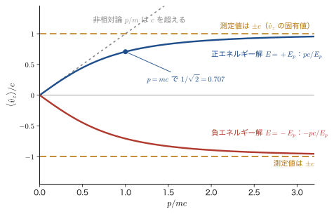
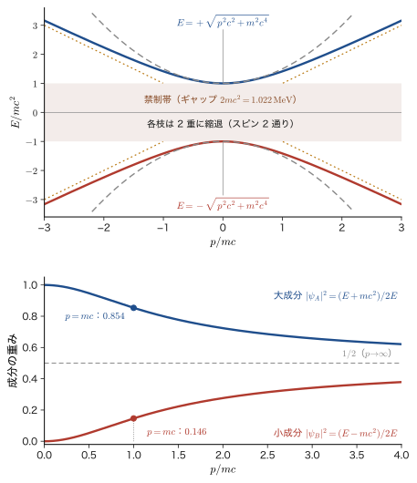
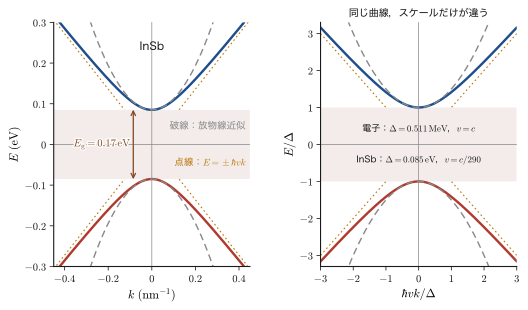

第62章Dirac 方程式 — 1 階の方程式とスピン 1/2
Schrödinger（シュレーディンガー）方程式は，電子の速さが光の速さ $c$ に比べて十分に遅いときにだけ正しい方程式である．時間については 1 階，空間については 2 階の微分を含むので，時間と空間を対等に扱う特殊相対性理論（AD 03「大学基礎物理学」第54章 54.7）とは相性が悪い．前章の Klein–Gordon 方程式は，エネルギーと運動量の関係 $E^2=p^2c^2+m^2c^4$ をそのまま演算子に置き換えて相対論と両立させたが，確率密度が負になりうること，そしてスピンを記述できないことという困難を残した．1928 年に Dirac（ディラック）は，困難の根が「時間について 2 階」という点にあると見抜き，時間についても空間についても 1 階の方程式を作ろうとした．その試みの結果は，きわめて実り多いものになった．係数が数ではなく $4\times4$ の行列になり，波動関数が 4 成分をもつ代わりに，確率密度 $\rho=\psi^\dagger\psi\ge0$ が保存し，しかも電子のスピン 1/2 が，仮定されるのではなく方程式の構造から自然に現れるのである．
この章では，Dirac 方程式を「なぜこの形でなければならないのか」から出発して組み立てる．まず，1 次式 $\hat{H}=c\,\bm{\alpha}\cdot\hat{\bm{p}}+\beta mc^2$ の二乗がエネルギーと運動量の関係を再現するための条件を求め，その条件を満たす係数が $4\times4$ の行列でなければならないことを証明する（62.1，62.2 節）．次に，確率密度と確率の流れ，そして速度演算子が $\pm c$ という奇妙な固有値をもつことを調べる（62.3 節）．さらに，Lorentz 変換に対して方程式の形が変わらない（共変である）ことを $\gamma$ 行列を使って示し，スピノルが「ベクトルとは違う」変換をすること，$2\pi$ 回転で符号が反転することを見る（62.4 節）．自由粒子の解を具体的に書き下し（62.5 節），最後に，軌道角運動量 $\hat{\bm{L}}$ が保存せず，スピン $\hbar\bm{\Sigma}/2$ を加えた $\hat{\bm{J}}$ だけが保存することから，スピンが Dirac 方程式に「最初から含まれていた」ことを確かめる（62.6 節）．水素原子の微細構造や $g=2$ は次章で，負エネルギー解の読み方は第64章で扱う．
材料との関わりも多い．加速電圧 $200\ \mathrm{kV}$ の透過電子顕微鏡の電子は光速の約 70 %（$100$〜$300\ \mathrm{kV}$ で 55〜78 %）で走っており，Dirac の 4 成分の「小さい方」は無視できない大きさになる．インジウムアンチモン（InSb）のような狭ギャップ半導体のバンドは，Dirac 方程式と同じ形の分散 $E=\pm\sqrt{\Delta^2+\hbar^2v^2k^2}$ で近似でき，グラフェンの電子は質量ゼロの Dirac 方程式に従う．この章はそれらすべての出発点になる．
- 時間について 2 階の Klein–Gordon 方程式がなぜ困難を抱えるのかを思い出し，時間も空間も 1 階の方程式 $i\hbar\,\partial_t\psi=(c\,\bm{\alpha}\cdot\hat{\bm{p}}+\beta mc^2)\psi$ を作る動機を説明できること
- $(c\,\bm{\alpha}\cdot\hat{\bm{p}}+\beta mc^2)^2=p^2c^2+m^2c^4$ から反交換関係 $\{\alpha_i,\alpha_j\}=2\delta_{ij}$，$\{\alpha_i,\beta\}=0$，$\alpha_i^2=\beta^2=1$ を導き，トレースがゼロ・固有値が $\pm1$・次元が偶数・$2\times2$ では不可能・最小は $4\times4$，と証明できること
- Dirac–Pauli 表示の $\alpha_i$，$\beta$ と 4 成分スピノル $\psi=(\psi_A,\psi_B)^{\mathsf T}$ のブロック形の方程式を書き，分散関係 $E=\pm\sqrt{p^2c^2+m^2c^4}$ を導けること
- 連続の式 $\partial_t\rho+\nabla\cdot\bm{j}=0$（$\rho=\psi^\dagger\psi$，$\bm{j}=c\,\psi^\dagger\bm{\alpha}\psi$）を導き，速度演算子 $c\,\bm{\alpha}$ の固有値が $\pm c$ であること，期待値が群速度 $pc^2/E$ に等しいことを示せること
- $\gamma^\mu$ 行列と共変形 $(i\hbar\gamma^\mu\partial_\mu-mc)\psi=0$，Lorentz 変換（ブースト・回転）に対するスピノルの変換 $\mathcal{S}$，$2\pi$ 回転で $-1$ となることを説明できること
- 静止系の 4 つの解と，運動量 $\bm{p}$ の平面波解 $u(\bm{p},s)$，$w(\bm{p},s)$ を求め，大成分・小成分の比，規格化，ヘリシティ，質量ゼロの極限，InSb の Dirac 型分散を扱えること
- $[\hat{H},\hat{\bm{L}}]\ne0$ を示し，$\hat{\bm{J}}=\hat{\bm{L}}+\hbar\bm{\Sigma}/2$ が保存すること，$\bm{\Sigma}^2=3$ からスピン $s=\tfrac12$ が自然に出ることを説明できること
もとにしたノート：本章はノートにない内容を補った章である．関連するノート：望月泰英『物理学ノート 量子力学3』 p. 73（第XI部の章扉の見出し「相対論的量子力学」）と pp. 1–10（スピンと Pauli 行列）．
62.1 Dirac の着想 — 時間も空間も 1 階にする
62.1.1 Klein–Gordon 方程式の困難 — 原因は「時間について 2 階」
前章（第61章）では，相対論のエネルギーと運動量の関係 $E^2=p^2c^2+m^2c^4$ の $E$ と $\bm{p}$ を演算子 $E\to i\hbar\,\partial_t$，$\bm{p}\to\hat{\bm{p}}=-i\hbar\nabla$ に置き換えて，Klein–Gordon 方程式
\begin{equation} \left(i\hbar\frac{\partial}{\partial t}\right)^{2}\psi=\left(\hat{\bm{p}}^{2}c^{2}+m^{2}c^{4}\right)\psi \qquad\text{すなわち}\qquad \left(\frac{1}{c^{2}}\frac{\partial^{2}}{\partial t^{2}}-\nabla^{2}+\frac{m^{2}c^{2}}{\hbar^{2}}\right)\psi=0 \label{eq:62-kg} \end{equation}を得た．ここで $m$ は粒子の質量である（この章では質量を $m$ と書く．電子なら $m=m_{\mathrm e}=9.109\times10^{-31}\ \mathrm{kg}$）．この方程式は $E^2=p^2c^2+m^2c^4$ を正しく再現し，Lorentz 変換に対して形を変えない．しかし次の困難があった．
- 確率密度が正とは限らない（61.4 節）．保存する密度に当たる量は $\psi$ と $\partial_t\psi$ の両方を含む形 $\rho\propto\psi^*\partial_t\psi-\psi\,\partial_t\psi^*$ になり，正にも負にもなりうる．「確率」として解釈できない．
- 負エネルギーの解（61.3 節）．$E=\pm\sqrt{p^2c^2+m^2c^4}$ の両方の符号が解になる．
- スピンがない（61.5 節）．$\psi$ は 1 成分のスカラー場で，銀原子の価電子に由来する二価性（Stern–Gerlach 実験，第23章 23.2）を表す自由度をもたない．
1 つめの困難の原因ははっきりしている．方程式 \eqref{eq:62-kg} は時間について 2 階なので，時刻 $t=0$ に $\psi$ と $\partial_t\psi$ を独立に指定できる．その 2 つから作る $\rho$ の符号を，初期条件で自由に選べてしまうのである．これに対して Schrödinger 方程式は時間について 1 階である．
62.1.2 時間について 1 階なら確率は保存する
Schrödinger 型の方程式
\begin{equation} i\hbar\frac{\partial\psi}{\partial t}=\hat{H}\psi \qquad(\hat{H}^\dagger=\hat{H}) \label{eq:62-schr} \end{equation}では，$\hat{H}$ がエルミートでさえあれば，確率の総量 $\braket{\psi}{\psi}=\int\psi^\dagger\psi\,\dd^3x$ は時間によらない．実際，$\dd\psi/\dd t=\hat{H}\psi/(i\hbar)$ とその複素共役から
$$ \frac{\dd}{\dd t}\braket{\psi}{\psi}=\frac{1}{i\hbar}\left(\mel{\psi}{\hat{H}}{\psi}-\mel{\psi}{\hat{H}^\dagger}{\psi}\right)=0 $$となる（$\psi^\dagger$ の時間微分は $\dd\psi/\dd t$ の共役をとるので符号が変わり，$\hat{H}^\dagger$ が現れる．エルミート性 $\hat{H}^\dagger=\hat{H}$ で 2 項が打ち消し合う）．局所的には連続の式 $\partial_t\rho+\nabla\cdot\bm{j}=0$ が成り立ち（第9章 9.3），密度 $\rho=\psi^\dagger\psi=\abs{\psi}^2$ は $\psi$ だけで決まるので，いつでも $0$ 以上である．Dirac の着想は，「この良い性質を保ったまま，相対論的な方程式を作れないか」という問いから始まる．
問題は空間の微分である．Schrödinger 方程式の $\hat{H}=\hat{\bm{p}}^2/2m+V$ は，時間の微分が 1 階なのに空間の微分は 2 階で，時間と空間が対等になっていない．Lorentz 変換は時間座標 $ct$ と空間座標 $x$ を混ぜる（AD 03 第54章 54.5）．微分演算子 $\partial_0=\dfrac{1}{c}\partial_t$ と $\partial_1=\partial_x$ も同じように混ざる（4 元勾配 $\partial_\mu=(\partial_0,\nabla)$．第58章 58.2）．ラピディティ $\eta$ のブースト $x'^0=\cosh\eta\,x^0-\sinh\eta\,x^1$，$x'^1=-\sinh\eta\,x^0+\cosh\eta\,x^1$ に対し，連鎖律から
$$\partial_0=\cosh\eta\,\partial'_0-\sinh\eta\,\partial'_1,\qquad\partial_1=-\sinh\eta\,\partial'_0+\cosh\eta\,\partial'_1$$である．これを 1 次元の Schrödinger 方程式 $i\hbar c\,\partial_0\psi=-\dfrac{\hbar^2}{2m}\partial_1^2\psi$ に代入すると，左辺は $\partial'_0$ と $\partial'_1$ の 1 階の組み合わせになるが，右辺は
$$\partial_1^2=\sinh^2\eta\,(\partial'_0)^2-2\sinh\eta\cosh\eta\,\partial'_0\partial'_1+\cosh^2\eta\,(\partial'_1)^2$$となり，もとの方程式にはなかった $(\partial'_0)^2$（時間の 2 階微分）や $\partial'_0\partial'_1$ の項が現れる．Schrödinger 方程式は，Lorentz 変換のもとでは形を保たない（Galilei 変換のもとでは保たれる）．これに対して，$\partial_0$ も $\partial_1$ も 1 階だけの方程式なら，変換後も 1 階の微分の 1 次結合が現れるだけで，同じ形にとどまりうる．したがって，時間の微分が 1 階しか現れない方程式が Lorentz 変換のもとで形を保つためには，空間の微分も 1 階でなければならない．Klein–Gordon 方程式がこの条件を満たしたのは，時間と空間の両方を 2 階にしたからである．
イメージ：平方根をとる
エネルギーと運動量の関係 $E^2=p^2c^2+m^2c^4$ から出発して，Klein–Gordon 方程式は「2 乗のまま」演算子にした．Dirac は逆に「平方根をとって」
$$E=\sqrt{p^2c^2+m^2c^4}\ \longrightarrow\ \hat{H}=c\,\alpha_x\hat{p}_x+c\,\alpha_y\hat{p}_y+c\,\alpha_z\hat{p}_z+\beta mc^2$$のように，$\hat{\bm{p}}$ について 1 次の式にしようとした．平方根そのものは $\hat{\bm{p}}$ の非線形な関数（級数に展開すると無限階の微分になる）で，局所的な微分方程式にならない．しかし，$p^2c^2+m^2c^4$ を「ある 1 次式の二乗」として因数分解できれば，その 1 次式を $\hat{H}$ として採用できる．$p_x^2+p_y^2+p_z^2$ のような平方和は実数の範囲では 1 次式の二乗にならないが，後で見るように，係数を行列にすれば可能になる．
62.1.3 Dirac の仮定
そこで次の形を仮定する．$\hat{H}$ は $\hat{\bm{p}}$ について 1 次で，質量の項 $mc^2$ を含む：
\begin{equation} i\hbar\frac{\partial\psi}{\partial t}=\hat{H}\psi,\qquad \hat{H}=c\left(\alpha_x\hat{p}_x+\alpha_y\hat{p}_y+\alpha_z\hat{p}_z\right)+\beta mc^2=c\,\bm{\alpha}\cdot\hat{\bm{p}}+\beta mc^2 \label{eq:62-dirac} \end{equation}これがDirac 方程式のハミルトニアン形である（Dirac 1928）．$\alpha_x,\alpha_y,\alpha_z,\beta$ は，$\bm{x}$，$t$，$\bm{p}$ によらない定数である．定数でなければならない理由は，(i) 自由粒子の方程式が空間・時間の並進で不変なので，係数が $\bm{x}$，$t$ に依存しないこと，(ii) 方程式が $\psi$ について線形（重ね合わせの原理）で，$\hat{H}$ を $\hat{\bm{p}}$ について 1 次と仮定したので，係数が $\bm{p}$ にも依存しないことによる．また，$\hat{H}$ の各項は「$c\times$運動量」「$mc^2$」と，どちらもエネルギーの次元をもつので，$\alpha_i$，$\beta$ は無次元になる．$\hat{H}$ がエルミートであることから $\alpha_i^\dagger=\alpha_i$，$\beta^\dagger=\beta$ であることがわかる（62.2 節）．これらが普通の数ではなく行列になる理由と，その大きさは次の節で明らかにする．
注意：同じ文字 $\alpha$，$\beta$ が別の意味で使われる
この章の $\alpha_i$（$i=x,y,z$）と $\beta$ は，Dirac が導入した行列（定数行列）である．次の量とは無関係なので，混同しないこと．
- スピン関数 $\alpha=\ket{\uparrow}$，$\beta=\ket{\downarrow}$（第23章 23.5）．この第XI部ではスピンの上向き・下向きを $\uparrow$，$\downarrow$ または $\chi_\uparrow$，$\chi_\downarrow$ と書き，$\alpha,\beta$ はスピン関数には使わない．
- 微細構造定数 $\alpha=e_0^2/(4\pi\varepsilon_0\hbar c)\approx1/137$．こちらは添字をつけず，$\alpha_i$ のようにも書かない．
- Hückel 法の共鳴積分 $\beta$（第40章）．
行列 $\alpha_x,\alpha_y,\alpha_z$ を成分とするベクトルは，太字 $\bm{\alpha}=(\alpha_x,\alpha_y,\alpha_z)$ と書く．$\bm{\alpha}\cdot\hat{\bm{p}}=\alpha_x\hat{p}_x+\alpha_y\hat{p}_y+\alpha_z\hat{p}_z$ は，行列 $\alpha_i$ に演算子 $\hat{p}_i$ を掛けて足したものである．
| 記号 | 意味 | 備考 |
|---|---|---|
| $m$ | 粒子の質量 | 電子なら $m=m_{\mathrm e}$ |
| $\alpha_i,\ \beta$ | Dirac の係数行列（$4\times4$） | スピン関数・微細構造定数とは別 |
| $\sigma_i$ | Pauli 行列（$2\times2$） | 第23章 23.7 |
| $\bm{\Sigma}$ | スピン行列（$4\times4$）．$\hat{\bm{S}}=\tfrac{\hbar}{2}\bm{\Sigma}$ | 62.6 節 |
| $\psi=(\psi_A,\psi_B)^{\mathsf T}$ | 4 成分スピノル．上 2 成分 $\psi_A$（大成分），下 2 成分 $\psi_B$（小成分） | 62.2，62.5 節 |
| $\chi_s$ | 2 成分スピノル（$s=\uparrow,\downarrow$） | 添字 $s=\uparrow,\downarrow$ はスピンの向きで，スピン量子数 $s=\tfrac12$ とは別．多電子系のスピン軌道 $\chi_i$ とも別 |
| $\gamma^\mu$ | $\gamma$ 行列．$\gamma^0=\beta$，$\gamma^i=\beta\alpha_i$ | 62.4 節 |
| $\mathcal{S}$ | Lorentz 変換でスピノルに掛ける行列 | スピン $\hat{S}$ とは別 |
| $E_p$ | $E_p=\sqrt{p^2c^2+m^2c^4}$（$p=\abs{\bm{p}}$） | 62.5 節 |
計量は $(+,-,-,-)$，座標は $x^\mu=(ct,\bm{x})$ とし，AD 03 第VIII部と同じにする．微分は $\partial_\mu=\partial/\partial x^\mu=(\tfrac{1}{c}\partial_t,\nabla)$ である．この章では $\hbar$ と $c$ を省略せずに書く．
62.1.4 条件：$\hat{H}^2=p^2c^2+m^2c^4$
式 \eqref{eq:62-dirac} が相対論的な自由粒子を正しく記述するために，何を要求すべきだろうか．自由粒子の解は平面波 $\psi=u\,e^{i(\bm{p}\cdot\bm{x}-Et)/\hbar}$ であり，エネルギーと運動量は $E^2=p^2c^2+m^2c^4$ で結ばれていなければならない．$\hat{H}$ は時間を含まないので，式 \eqref{eq:62-schr} を 2 回使うと
$$ \left(i\hbar\frac{\partial}{\partial t}\right)^{2}\psi=i\hbar\frac{\partial}{\partial t}\bigl(\hat{H}\psi\bigr)=\hat{H}\left(i\hbar\frac{\partial\psi}{\partial t}\right)=\hat{H}^{2}\psi $$となる．これが Klein–Gordon 方程式 \eqref{eq:62-kg} と同じ $\left(\hat{\bm{p}}^2c^2+m^2c^4\right)\psi$ に等しいためには，
\begin{equation} \hat{H}^{2}=\hat{\bm{p}}^{2}c^{2}+m^{2}c^{4}\qquad(\text{単位行列を掛けたものと理解する}) \label{eq:62-square} \end{equation}が成り立てばよい．左辺を展開しよう．$\hat{p}_x,\hat{p}_y,\hat{p}_z$ は互いに可換で，定数行列 $\alpha_i$，$\beta$ とも可換である（$\hat{p}_i$ は微分演算子で，行列の成分は数だから）．一方，行列どうしは一般に可換ではないので，掛ける順序を保って展開する：
\begin{equation} \hat{H}^{2}=c^{2}\sum_{i,j}\alpha_i\alpha_j\,\hat{p}_i\hat{p}_j+mc^{3}\sum_i\left(\alpha_i\beta+\beta\alpha_i\right)\hat{p}_i+\beta^{2}m^{2}c^{4}. \label{eq:62-expand} \end{equation}第 1 項では，$\hat{p}_i\hat{p}_j=\hat{p}_j\hat{p}_i$ なので，$(i,j)$ と $(j,i)$ の項をまとめて $i=j$ の項と $i\lt j$ の項に分けられる：$\sum_{i,j}\alpha_i\alpha_j\hat{p}_i\hat{p}_j=\sum_i\alpha_i^2\hat{p}_i^2+\sum_{i\lt j}(\alpha_i\alpha_j+\alpha_j\alpha_i)\hat{p}_i\hat{p}_j$．これを $\hat{\bm{p}}^2c^2+m^2c^4=c^2\sum_i\hat{p}_i^2+m^2c^4$ と比べると，運動量 $\hat{p}_i$ の値は任意なので，各項の係数が一致しなければならない．
- $\hat{p}_i^2$ の係数：$\alpha_i^2=1$．
- $\hat{p}_i\hat{p}_j$（$i\ne j$）の係数：$\alpha_i\alpha_j+\alpha_j\alpha_i=0$（この項は $\hat{\bm{p}}^2$ に存在しないので消えなければならない）．
- $\hat{p}_i$ の係数：$\alpha_i\beta+\beta\alpha_i=0$（同様に，1 次の項は右辺にないので消えなければならない）．
- 定数項：$\beta^2=1$．
これが $\alpha_i$，$\beta$ に課される条件である．ふつうの数では，$\alpha_x\alpha_y+\alpha_y\alpha_x=2\alpha_x\alpha_y=0$ となって $\alpha_x=0$ か $\alpha_y=0$ になり，$\alpha_i^2=1$ と矛盾する．条件を満たすには，掛ける順序で結果が変わる（非可換な）対象，つまり行列が必要になる．次の例題で，展開を具体的に確かめよう．
例題62.1 $\hat{H}^2$ の展開と $4\times4$ 行列による確認
(1) $\hat{H}=c(\alpha_x\hat{p}_x+\alpha_y\hat{p}_y+\alpha_z\hat{p}_z)+\beta mc^2$ の二乗を，$\hat{p}_x\hat{p}_y$ の係数と $\hat{p}_x$ の係数に注目して展開し，式 \eqref{eq:62-square} が任意の運動量で成り立つための $\alpha_i$，$\beta$ の条件を書け．(2) 次の節で作る $4\times4$ 行列 $\alpha_i=\begin{pmatrix}0&\sigma_i\\\sigma_i&0\end{pmatrix}$，$\beta=\begin{pmatrix}1&0\\0&-1\end{pmatrix}$ を使い，運動量 $\bm{p}=(0.3,\,-0.4,\,1.2)\,mc$ のとき，$\hat{H}$ を平面波の運動量の値で置き換えた行列 $H(\bm{p})=c\,\bm{\alpha}\cdot\bm{p}+\beta mc^2$ の二乗が $\bigl(\abs{\bm{p}}^2c^2+m^2c^4\bigr)$ の単位行列倍になることを確かめよ．
解答 (1) 積を展開する．$\hat{H}=A+B$，$A=c\sum_i\alpha_i\hat{p}_i$，$B=\beta mc^2$ とおくと $\hat{H}^2=A^2+AB+BA+B^2$ である．
$A^2$ は，$\hat{p}_x\hat{p}_y$ に関わる部分が $c^2(\alpha_x\alpha_y\hat{p}_x\hat{p}_y+\alpha_y\alpha_x\hat{p}_y\hat{p}_x)=c^2(\alpha_x\alpha_y+\alpha_y\alpha_x)\hat{p}_x\hat{p}_y$ になる（$\hat{p}_y\hat{p}_x=\hat{p}_x\hat{p}_y$）．したがって，$\hat{p}_x\hat{p}_y$ の係数は $c^2(\alpha_x\alpha_y+\alpha_y\alpha_x)$ であり，$\hat{\bm{p}}^2c^2$ には $\hat{p}_x\hat{p}_y$ の項がないので，これが $0$ でなければならない．
$AB+BA=mc^3\sum_i(\alpha_i\beta+\beta\alpha_i)\hat{p}_i$．$\hat{p}_x$ の係数は $mc^3(\alpha_x\beta+\beta\alpha_x)$ で，これも右辺にない項なので $0$ でなければならない．
$\hat{p}_x^2$ の係数は $c^2\alpha_x^2$ で，右辺の $c^2$ に等しくなければならないから $\alpha_x^2=1$，定数項は $\beta^2m^2c^4=m^2c^4$ から $\beta^2=1$．まとめると，条件は
$$\alpha_i^2=\beta^2=1,\qquad \alpha_i\alpha_j+\alpha_j\alpha_i=0\ (i\ne j),\qquad \alpha_i\beta+\beta\alpha_i=0.$$(2) エネルギーは $mc^2$ を単位に，運動量は $mc$ を単位に測る（したがって $cp$ の単位も $mc^2$）．$\tilde{\bm{p}}=\bm{p}/(mc)=(0.3,\,-0.4,\,1.2)$ とおくと，$\tilde{H}=H(\bm{p})/mc^2=\begin{pmatrix}1&\bm{\sigma}\cdot\tilde{\bm{p}}\\\bm{\sigma}\cdot\tilde{\bm{p}}&-1\end{pmatrix}$ である．ここで $\bm{\sigma}\cdot\tilde{\bm{p}}=\sigma_x\tilde{p}_x+\sigma_y\tilde{p}_y+\sigma_z\tilde{p}_z=\begin{pmatrix}\tilde{p}_z&\tilde{p}_x-i\tilde{p}_y\\\tilde{p}_x+i\tilde{p}_y&-\tilde{p}_z\end{pmatrix}=\begin{pmatrix}1.2&0.3+0.4i\\0.3-0.4i&-1.2\end{pmatrix}$．ブロックごとに二乗すると
$$\tilde{H}^2=\begin{pmatrix}1+(\bm{\sigma}\cdot\tilde{\bm{p}})^2&\bm{\sigma}\cdot\tilde{\bm{p}}-\bm{\sigma}\cdot\tilde{\bm{p}}\\\bm{\sigma}\cdot\tilde{\bm{p}}-\bm{\sigma}\cdot\tilde{\bm{p}}&(\bm{\sigma}\cdot\tilde{\bm{p}})^2+1\end{pmatrix}=\bigl(1+(\bm{\sigma}\cdot\tilde{\bm{p}})^2\bigr)\begin{pmatrix}1&0\\0&1\end{pmatrix}.$$非対角ブロックは $1\cdot\bm{\sigma}\cdot\tilde{\bm{p}}+\bm{\sigma}\cdot\tilde{\bm{p}}\cdot(-1)=0$ で消える．$(\bm{\sigma}\cdot\tilde{\bm{p}})^2$ を成分で計算すると，(1,1) 成分は $1.2^2+(0.3+0.4i)(0.3-0.4i)=1.44+0.09+0.16=1.69$，(1,2) 成分は $1.2(0.3+0.4i)+(0.3+0.4i)(-1.2)=0$，(2,2) 成分は $(0.3-0.4i)(0.3+0.4i)+1.44=1.69$ なので $(\bm{\sigma}\cdot\tilde{\bm{p}})^2=1.69\cdot\mathbb{1}$（$=\abs{\tilde{\bm{p}}}^2$：$0.09+0.16+1.44=1.69$）．よって $\tilde{H}^2=(1+1.69)\,\mathbb{1}_4=2.69\,\mathbb{1}_4$，すなわち $H^2=\bigl(\abs{\bm{p}}^2c^2+m^2c^4\bigr)\mathbb{1}_4=2.69\,m^2c^4\,\mathbb{1}_4$ で，$(\abs{\bm{p}}^2c^2+m^2c^4)=(1.69+1)\,m^2c^4$ の単位行列倍になる．エネルギー固有値は $E=\pm\sqrt{2.69}\,mc^2=\pm1.640\,mc^2$ である．
歴史：Dirac とスピン
P. A. M. Dirac（ディラック）は 1928 年の論文 “The quantum theory of the electron”（Proc. R. Soc. A 117, 610）で，上の方程式を提案した．当時，電子のスピンは Uhlenbeck（ウーレンベック）と Goudsmit（ハウトスミット）（1925 年）の仮説として知られ，Pauli（パウリ）が 1927 年に 2 成分の波動関数と Pauli 行列でスピンを非相対論的な量子力学に「手で付け加える」方法を与えていた．Dirac の方程式は，スピンを仮定せずに，時間について 1 階で相対論と両立するという要求だけから，スピン 1/2 と磁気モーメント（$g=2$，第63章）を導き，水素原子の微細構造の正しい公式（第63章）を与えた．負エネルギーの解は，のちの陽電子の予言（第64章）につながる．
62.2 $\alpha_i$ と $\beta$ の代数 — なぜ $4\times4$ の行列でなければならないか
62.2.1 反交換関係
前節の結論を，反交換子 $\acomm{A}{B}=AB+BA$ を使って整理する．
定理62.1 $\alpha_i$，$\beta$ の代数
式 \eqref{eq:62-dirac} の $\hat{H}$ が，任意の運動量に対して $\hat{H}^2=\hat{\bm{p}}^2c^2+m^2c^4$ を満たし，かつエルミートであるための必要十分条件は，定数行列 $\alpha_x,\alpha_y,\alpha_z,\beta$ が次を満たすことである（$i,j=x,y,z$）：
\begin{equation} \acomm{\alpha_i}{\alpha_j}=2\delta_{ij},\qquad \acomm{\alpha_i}{\beta}=0,\qquad \beta^2=1,\qquad \alpha_i^\dagger=\alpha_i,\quad\beta^\dagger=\beta. \label{eq:62-algebra} \end{equation}ここで右辺の $2\delta_{ij}$ や $1$ は，単位行列に掛けたものと読む．
証明
62.1.4 節で，$\hat{H}^2$ を展開した結果から条件 $\alpha_i^2=1$，$\alpha_i\alpha_j+\alpha_j\alpha_i=0$（$i\ne j$），$\alpha_i\beta+\beta\alpha_i=0$，$\beta^2=1$ を得た．最初の 2 つは $\acomm{\alpha_i}{\alpha_j}=2\delta_{ij}$ にまとめられる（$i=j$ のとき左辺は $2\alpha_i^2$）．逆に，これらの条件から式 \eqref{eq:62-expand} の右辺は $c^2\sum_i\hat{p}_i^2+m^2c^4$ になる．
エルミート性：$\hat{p}_i$ はエルミート演算子で，行列 $\alpha_i$ とは可換なので，$\hat{H}^\dagger=c\sum_i\alpha_i^\dagger\hat{p}_i+\beta^\dagger mc^2$ である．これが任意の $\hat{p}_i$ について $\hat{H}$ と一致するためには，各係数が一致して $\alpha_i^\dagger=\alpha_i$，$\beta^\dagger=\beta$ でなければならない．
（証明終わり）
この 4 つの行列は，4 個が互いに反交換し，それぞれ二乗が単位行列になる，という性質で特徴づけられる．数学では Clifford（クリフォード）代数とよばれる構造の一例である．62.4 節の $\gamma$ 行列は，この同じ代数を時空の 4 つの方向に対して書き直したものになる．
62.2.2 数では足りない — 行列の次元
すでに見たとおり，$1\times1$ の行列（ふつうの数）では条件を満たせない．では，どの大きさの行列なら満たせるのだろうか．次の定理が答える．
定理62.2 行列の次元
$N\times N$ 行列 $\alpha_x,\alpha_y,\alpha_z,\beta$ が式 \eqref{eq:62-algebra} を満たすとする．このとき，
- 4 つの行列の固有値は $+1$ か $-1$ だけである．
- 4 つの行列はすべて，トレースが $0$ である：$\tr\alpha_i=\tr\beta=0$．
- 次元 $N$ は偶数である．
- $N=2$ では，互いに反交換する 4 つの（二乗が $1$ の，エルミートな）行列は存在しない．したがって，条件を満たす最小の次元は $N=4$ である．
証明
(1) 固有値．$A$ を 4 つの行列のどれかとし，$A\bm{v}=\lambda\bm{v}$（$\bm{v}\ne0$）とする．$A^2=1$ なので $\bm{v}=A^2\bm{v}=\lambda^2\bm{v}$，よって $\lambda^2=1$，$\lambda=\pm1$．
(2) トレース．$\alpha_i\beta=-\beta\alpha_i$ の両辺に右から $\beta$ を掛け，$\beta^2=1$ を使うと $\alpha_i=-\beta\alpha_i\beta$ となる．トレースをとり，トレースの巡回性 $\tr(XYZ)=\tr(ZXY)$ を使うと
$$\tr\alpha_i=-\tr(\beta\alpha_i\beta)=-\tr(\alpha_i\beta\beta)=-\tr\alpha_i\qquad\therefore\ \tr\alpha_i=0.$$$\beta$ についても同様に，$\alpha_i\beta\alpha_i=-\beta\alpha_i\alpha_i=-\beta$ から $\beta=-\alpha_i\beta\alpha_i$ を得て $\tr\beta=-\tr(\alpha_i\beta\alpha_i)=-\tr(\beta\alpha_i^2)=-\tr\beta$，よって $\tr\beta=0$．
(3) 偶数次元．エルミート行列は対角化でき，トレースは固有値の和である（大学数学 第12章 12.3）．(1) より固有値は $\pm1$ だから，$+1$ の個数を $n_+$，$-1$ の個数を $n_-$ とすると $\tr A=n_+-n_-$ である．(2) より $n_+=n_-$ なので，$N=n_++n_-=2n_+$ は偶数である．
(4) $N=2$ の不可能性．トレースが $0$ の $2\times2$ エルミート行列は，実数 $a_x,a_y,a_z$ を使って $\bm{a}\cdot\bm{\sigma}=a_x\sigma_x+a_y\sigma_y+a_z\sigma_z$ の形に書ける（一般の $2\times2$ エルミート行列は $a_0\mathbb{1}+\bm{a}\cdot\bm{\sigma}$ であり，トレースは $2a_0$）．Pauli 行列の性質 $\sigma_i\sigma_j+\sigma_j\sigma_i=2\delta_{ij}$ から
$$\acomm{\bm{a}\cdot\bm{\sigma}}{\bm{b}\cdot\bm{\sigma}}=\sum_{i,j}a_ib_j\,\acomm{\sigma_i}{\sigma_j}=2\,(\bm{a}\cdot\bm{b})\,\mathbb{1}.$$つまり，2 つの行列 $\bm{a}\cdot\bm{\sigma}$，$\bm{b}\cdot\bm{\sigma}$ が反交換するための条件は，実ベクトル $\bm{a}$，$\bm{b}$ が直交することであり，二乗が $1$ であるための条件は $\abs{\bm{a}}=1$ である．したがって，互いに反交換し二乗が $1$ の $2\times2$ 行列を 4 つ作ることは，3 次元空間に互いに直交する単位ベクトルを 4 本とることと同じであり，不可能である（3 次元では最大 3 本）．実際，3 つまでは Pauli 行列 $\sigma_x,\sigma_y,\sigma_z$ がそうなっている．
以上から，$N$ は偶数で $N=2$ ではない．最小の候補は $N=4$ で，実際に作れることは次に示す．
（証明終わり）
考察：質量がゼロなら $2\times2$ で足りる — $4\times4$ は質量の代償
反交換する行列が 4 つ必要なのは，質量の項 $\beta mc^2$ があるためである．$m=0$ なら $\beta$ は要らず，$\hat{H}=c\,\bm{\alpha}\cdot\hat{\bm{p}}$ に必要なのは互いに反交換する 3 つの行列だけで，$\alpha_i=\pm\sigma_i$（$2\times2$）で足りる（Weyl 方程式，62.5.4 節）．質量の項を加えるには 4 つ目の反交換する行列 $\beta$ が要り，それには $4\times4$ が必要になる．つまり，4 成分は質量の代償である．質量ゼロの Dirac 方程式が 2 成分ずつの 2 つの方程式に分かれることは，これと矛盾しない．
数学の道具：Pauli 行列の代数
Pauli 行列は $\sigma_i\sigma_j=\delta_{ij}+i\sum_k\varepsilon_{ijk}\sigma_k$ を満たす（第23章 23.7）．ここから，反交換子 $\acomm{\sigma_i}{\sigma_j}=2\delta_{ij}$，交換子 $\comm{\sigma_i}{\sigma_j}=2i\sum_k\varepsilon_{ijk}\sigma_k$，および任意の 3 次元ベクトル $\bm{a}$，$\bm{b}$ について
$$(\bm{\sigma}\cdot\bm{a})(\bm{\sigma}\cdot\bm{b})=\bm{a}\cdot\bm{b}+i\,\bm{\sigma}\cdot(\bm{a}\times\bm{b}),\qquad(\bm{\sigma}\cdot\bm{p})^2=\abs{\bm{p}}^2\,\mathbb{1}$$が従う．最後の式はこの章で何度も使う．行列の積の計算は大学数学 第8章 8.1，固有値問題は第12章 12.1を見よ．
例題62.2 $2\times2$ での不可能性を直接確かめる
$\sigma_x,\sigma_y,\sigma_z$ のすべてと反交換する $2\times2$ 行列 $M=\begin{pmatrix}a&b\\c&d\end{pmatrix}$ は零行列しかないことを，成分を使って直接示せ．また，$N=3$ が不可能であることを示せ．
解答 $\sigma_z=\begin{pmatrix}1&0\\0&-1\end{pmatrix}$ について：$\sigma_zM=\begin{pmatrix}a&b\\-c&-d\end{pmatrix}$，$M\sigma_z=\begin{pmatrix}a&-b\\c&-d\end{pmatrix}$，和は $\begin{pmatrix}2a&0\\0&-2d\end{pmatrix}$ なので，反交換するなら $a=d=0$．このとき $M=\begin{pmatrix}0&b\\c&0\end{pmatrix}$．
$\sigma_x=\begin{pmatrix}0&1\\1&0\end{pmatrix}$ について：$\sigma_xM=\begin{pmatrix}c&0\\0&b\end{pmatrix}$，$M\sigma_x=\begin{pmatrix}b&0\\0&c\end{pmatrix}$，和は $(b+c)\mathbb{1}$ なので $c=-b$．
$\sigma_y=\begin{pmatrix}0&-i\\i&0\end{pmatrix}$ について：$\sigma_yM=\begin{pmatrix}-ic&0\\0&ib\end{pmatrix}$，$M\sigma_y=\begin{pmatrix}ib&0\\0&-ic\end{pmatrix}$，和は $i(b-c)\mathbb{1}$ なので $c=b$．
$c=-b$ と $c=b$ から $b=c=0$．よって $M=0$ であり，Pauli 行列の 3 つを使う限り 4 つ目は加えられない．一般の 3 つの組は $\bm{a}_k\cdot\bm{\sigma}$（$\bm{a}_k$ は直交する単位ベクトル）の形で，定理62.2 (4) のとおり，その 3 つのすべてと反交換する 4 つ目は存在しない．
$N=3$：定理62.2 (2)，(3) より，トレースが $0$ の行列の固有値は $+1$ と $-1$ が同数でなければならない．$N=3$ では固有値 $\pm1$ を合わせて 3 個なので，$n_+-n_-$ は奇数（$\pm1$ か $\pm3$）となり，$0$ にできない．したがって $N=3$ も不可能で，最初に可能なのは $N=4$ である．
62.2.3 最小の実現：Dirac–Pauli 表示
定義62.1 Dirac–Pauli（標準）表示
$2\times2$ のブロックで書いた次の $4\times4$ 行列を，Dirac–Pauli 表示（Dirac の標準表示）の $\alpha_i$，$\beta$ とよぶ：
\begin{equation} \alpha_i=\begin{pmatrix}0&\sigma_i\\\sigma_i&0\end{pmatrix},\qquad \beta=\begin{pmatrix}\mathbb{1}&0\\0&-\mathbb{1}\end{pmatrix}=\begin{pmatrix}1&0&0&0\\0&1&0&0\\0&0&-1&0\\0&0&0&-1\end{pmatrix}. \label{eq:62-rep} \end{equation}ここで $\sigma_i$ は Pauli 行列，$\mathbb{1}$ と $0$ は $2\times2$ の単位行列と零行列である．具体的に書くと，$\alpha_x=\begin{pmatrix}0&0&0&1\\0&0&1&0\\0&1&0&0\\1&0&0&0\end{pmatrix}$，$\alpha_y=\begin{pmatrix}0&0&0&-i\\0&0&i&0\\0&-i&0&0\\i&0&0&0\end{pmatrix}$，$\alpha_z=\begin{pmatrix}0&0&1&0\\0&0&0&-1\\1&0&0&0\\0&-1&0&0\end{pmatrix}$ である．
これが式 \eqref{eq:62-algebra} を満たすことを確かめよう．$2\times2$ のブロックを 1 つの要素のように扱い，ブロックどうしの積を計算する（順序を保つ）．
例題62.3 ブロック計算による代数の確認
式 \eqref{eq:62-rep} の行列について，(1) $\alpha_x^2=1$，(2) $\alpha_x\alpha_y+\alpha_y\alpha_x=0$，(3) $\alpha_x\beta+\beta\alpha_x=0$，(4) $\alpha_i^\dagger=\alpha_i$，$\tr\alpha_i=0$ を，ブロック計算で示せ．
解答 (1) $\alpha_x^2=\begin{pmatrix}0&\sigma_x\\\sigma_x&0\end{pmatrix}\begin{pmatrix}0&\sigma_x\\\sigma_x&0\end{pmatrix}=\begin{pmatrix}\sigma_x^2&0\\0&\sigma_x^2\end{pmatrix}=\begin{pmatrix}\mathbb{1}&0\\0&\mathbb{1}\end{pmatrix}$（$\sigma_x^2=\mathbb{1}$）．
(2) $\alpha_x\alpha_y=\begin{pmatrix}\sigma_x\sigma_y&0\\0&\sigma_x\sigma_y\end{pmatrix}=\begin{pmatrix}i\sigma_z&0\\0&i\sigma_z\end{pmatrix}$（$\sigma_x\sigma_y=i\sigma_z$），同様に $\alpha_y\alpha_x=\begin{pmatrix}\sigma_y\sigma_x&0\\0&\sigma_y\sigma_x\end{pmatrix}=\begin{pmatrix}-i\sigma_z&0\\0&-i\sigma_z\end{pmatrix}$（$\sigma_y\sigma_x=-i\sigma_z$）．和は $0$．
(3) $\alpha_x\beta=\begin{pmatrix}0&\sigma_x\\\sigma_x&0\end{pmatrix}\begin{pmatrix}\mathbb{1}&0\\0&-\mathbb{1}\end{pmatrix}=\begin{pmatrix}0&-\sigma_x\\\sigma_x&0\end{pmatrix}$，$\beta\alpha_x=\begin{pmatrix}\mathbb{1}&0\\0&-\mathbb{1}\end{pmatrix}\begin{pmatrix}0&\sigma_x\\\sigma_x&0\end{pmatrix}=\begin{pmatrix}0&\sigma_x\\-\sigma_x&0\end{pmatrix}$．和は $0$．
(4) ブロックの共役転置は，ブロックの位置を転置して各ブロックの共役転置をとる：$\begin{pmatrix}0&\sigma_i\\\sigma_i&0\end{pmatrix}^\dagger=\begin{pmatrix}0&\sigma_i^\dagger\\\sigma_i^\dagger&0\end{pmatrix}=\begin{pmatrix}0&\sigma_i\\\sigma_i&0\end{pmatrix}$（$\sigma_i^\dagger=\sigma_i$）．トレースは対角ブロックのトレースの和で，対角ブロックは $0$ だから $\tr\alpha_i=0$．$\beta$ のトレースは $\tr\mathbb{1}-\tr\mathbb{1}=2-2=0$．以上より，$\alpha_x^2=\alpha_y^2=\alpha_z^2=\beta^2=1$ も含めて，式 \eqref{eq:62-algebra} がすべて成り立つ．なお $\alpha_z$ の固有値は，$\alpha_z^2=1$ とトレース $0$ から $+1$ が 2 個，$-1$ が 2 個である（具体的に特性多項式を計算すると $(\lambda^2-1)^2=0$）．
例題62.4 一般の向きの $\bm{n}\cdot\bm{\alpha}$ — 反交換する行列は 3 方向と $\beta$ まで
単位ベクトル $\bm{n}=(1,2,2)/3$，$\bm{m}=(2,1,-2)/3$ について，(1) $\bm{n}\cdot\bm{m}=0$，$\abs{\bm{n}}=\abs{\bm{m}}=1$ を確かめ，$\bm{l}=\bm{n}\times\bm{m}$ を求めよ．(2) $\alpha_n=\bm{n}\cdot\bm{\alpha}$，$\alpha_m=\bm{m}\cdot\bm{\alpha}$，$\alpha_l=\bm{l}\cdot\bm{\alpha}$ と $\beta$ の 4 つが，互いに反交換し，二乗が $1$ であることを示せ．(3) $2\times2$ では，$\sigma_n=\bm{n}\cdot\bm{\sigma}$，$\sigma_m$，$\sigma_l$ の 3 つで尽き，4 つ目が作れないことを，3 次元ベクトルの言葉で説明せよ．
解答 (1) $\bm{n}\cdot\bm{m}=(1\cdot2+2\cdot1+2\cdot(-2))/9=(2+2-4)/9=0$．$\abs{\bm{n}}^2=(1+4+4)/9=1$，$\abs{\bm{m}}^2=(4+1+4)/9=1$．外積は $\bm{l}=\dfrac{1}{9}\bigl(2\cdot(-2)-2\cdot1,\ 2\cdot2-1\cdot(-2),\ 1\cdot1-2\cdot2\bigr)=\dfrac{1}{9}(-6,\,6,\,-3)=\dfrac{1}{3}(-2,\,2,\,-1)$．$\abs{\bm{l}}^2=(4+4+1)/9=1$，$\bm{l}\cdot\bm{n}=(-2+4-2)/9=0$，$\bm{l}\cdot\bm{m}=(-4+2+2)/9=0$．3 本は互いに直交する単位ベクトルである．
(2) 実数ベクトル $\bm{a}$，$\bm{b}$ について，$\acomm{\alpha_i}{\alpha_j}=2\delta_{ij}$ を使うと，$\acomm{\bm{a}\cdot\bm{\alpha}}{\bm{b}\cdot\bm{\alpha}}=\sum_{i,j}a_ib_j\acomm{\alpha_i}{\alpha_j}=2\,(\bm{a}\cdot\bm{b})\,\mathbb{1}$ である．したがって，$\acomm{\alpha_n}{\alpha_m}=2\bm{n}\cdot\bm{m}=0$，$\acomm{\alpha_n}{\alpha_l}=2\bm{n}\cdot\bm{l}=0$，$\acomm{\alpha_m}{\alpha_l}=2\bm{m}\cdot\bm{l}=0$，$\alpha_n^2=\abs{\bm{n}}^2=1$（$\alpha_m^2$，$\alpha_l^2$ も同様）．$\beta$ とは $\acomm{\bm{a}\cdot\bm{\alpha}}{\beta}=\sum_ia_i\acomm{\alpha_i}{\beta}=0$ である．こうして $\alpha_n,\alpha_m,\alpha_l,\beta$ は互いに反交換し，二乗が $1$ のエルミート行列（$4\times4$）になる．Dirac–Pauli 表示で $\alpha_n=\begin{pmatrix}0&\sigma_n\\\sigma_n&0\end{pmatrix}$，$\sigma_n=\dfrac13\begin{pmatrix}2&1-2i\\1+2i&-2\end{pmatrix}$ であり，たとえば $\sigma_n^2$ の (1,1) 成分は $\dfrac{1}{9}\bigl(4+(1-2i)(1+2i)\bigr)=\dfrac{4+5}{9}=1$，(1,2) 成分は $\dfrac{1}{9}\bigl(2(1-2i)-(1-2i)\cdot2\bigr)=0$ となって $\sigma_n^2=\mathbb{1}$ を満たす．
(3) $2\times2$ のトレースが $0$ のエルミート行列は $\bm{a}\cdot\bm{\sigma}$ の形で，反交換するための条件は $\bm{a}\perp\bm{b}$，二乗が $1$ であるための条件は $\abs{\bm{a}}=1$ だった（定理62.2 (4)）．$\bm{n},\bm{m},\bm{l}$ は 3 次元空間の基底なので，これらすべてに直交する $0$ でないベクトルは存在せず，4 つ目の行列は作れない．$4\times4$ では，3 つの $\alpha$ に加えて，3 次元のベクトルでは表せない $\beta$ が 4 つ目として反交換する．
他の表示とユニタリ同値
式 \eqref{eq:62-algebra} を満たす $4\times4$ 行列の組は，Dirac–Pauli 表示だけではない．ユニタリ行列 $U$ で $\alpha_i'=U\alpha_iU^\dagger$，$\beta'=U\beta U^\dagger$ と変換しても，同じ代数を満たす．波動関数も $\psi'=U\psi$ と変換すれば方程式は同じ物理を表す．代表的なものに，質量ゼロの粒子を扱うのに便利な Weyl（カイラル）表示があり，演習62.2 で Dirac–Pauli 表示とのつながりを確かめる．素粒子物理学（AD 09）の付録（AD 09 付録C C.2）に 3 つの表示の一覧がある．4 つの行列の代数を満たす $4\times4$ 行列の組は，ユニタリ変換を除いて一意に定まることも知られている（本書では証明しない）．なお，4 つの反交換する行列を作れる次元は $N=4,8,12,\dots$ と，実は 4 の倍数だけである．
62.2.4 4 成分スピノルとブロック形の方程式
行列が $4\times4$ なので，波動関数は 4 つの成分をもつ列ベクトルになる．
\begin{equation} \psi(\bm{x},t)=\begin{pmatrix}\psi_1\\\psi_2\\\psi_3\\\psi_4\end{pmatrix}=\begin{pmatrix}\psi_A\\\psi_B\end{pmatrix},\qquad \psi_A=\begin{pmatrix}\psi_1\\\psi_2\end{pmatrix},\quad\psi_B=\begin{pmatrix}\psi_3\\\psi_4\end{pmatrix}. \label{eq:62-spinor} \end{equation}これを4 成分スピノル（spinor）とよぶ．各成分 $\psi_a(\bm{x},t)$ は位置と時間の複素関数である．「ベクトル」ではなく「スピノル」とよぶ理由は，Lorentz 変換（回転を含む）のもとで，普通の 4 元ベクトルとは違う変換を受けるからで，62.4 節で説明する．
式 \eqref{eq:62-dirac} にブロック形の \eqref{eq:62-rep} を代入する．$\bm{\alpha}\cdot\hat{\bm{p}}=\begin{pmatrix}0&\bm{\sigma}\cdot\hat{\bm{p}}\\\bm{\sigma}\cdot\hat{\bm{p}}&0\end{pmatrix}$（$\bm{\sigma}\cdot\hat{\bm{p}}=\sigma_x\hat{p}_x+\sigma_y\hat{p}_y+\sigma_z\hat{p}_z=-i\hbar\,\bm{\sigma}\cdot\nabla$ は $2\times2$ の演算子行列）だから，
\begin{equation} i\hbar\frac{\partial}{\partial t}\begin{pmatrix}\psi_A\\\psi_B\end{pmatrix} =\begin{pmatrix}mc^2&c\,\bm{\sigma}\cdot\hat{\bm{p}}\\c\,\bm{\sigma}\cdot\hat{\bm{p}}&-mc^2\end{pmatrix}\begin{pmatrix}\psi_A\\\psi_B\end{pmatrix} \label{eq:62-block} \end{equation}である．上下の成分に分けて書くと，
\begin{align} i\hbar\frac{\partial\psi_A}{\partial t}&=mc^2\,\psi_A+c\,(\bm{\sigma}\cdot\hat{\bm{p}})\,\psi_B, \label{eq:62-blockA}\\ i\hbar\frac{\partial\psi_B}{\partial t}&=c\,(\bm{\sigma}\cdot\hat{\bm{p}})\,\psi_A-mc^2\,\psi_B. \label{eq:62-blockB} \end{align}質量の項 $\beta mc^2$ は対角ブロック（$\psi_A$ には $+mc^2$，$\psi_B$ には $-mc^2$），運動量の項 $c\,\bm{\alpha}\cdot\hat{\bm{p}}$ は非対角ブロックで，$\psi_A$ と $\psi_B$ を結びつける．運動量がゼロなら 2 つは独立で，$\psi_A$ がエネルギー $+mc^2$，$\psi_B$ が $-mc^2$ をもつ．
平面波 $\psi=\begin{pmatrix}u_A\\u_B\end{pmatrix}e^{i(\bm{p}\cdot\bm{x}-Et)/\hbar}$ を代入すると，$i\hbar\partial_t\to E$，$\hat{\bm{p}}\to\bm{p}$ なので
\begin{equation} (E-mc^2)\,u_A=c\,(\bm{\sigma}\cdot\bm{p})\,u_B,\qquad (E+mc^2)\,u_B=c\,(\bm{\sigma}\cdot\bm{p})\,u_A. \label{eq:62-pw} \end{equation}第 1 式に $E+mc^2$ を掛け，$c\,\bm{\sigma}\cdot\bm{p}$ が $E$ と可換であることを使って第 2 式を代入し，$(\bm{\sigma}\cdot\bm{p})^2=\abs{\bm{p}}^2$ を使うと
$$(E+mc^2)(E-mc^2)\,u_A=c\,(\bm{\sigma}\cdot\bm{p})\,\bigl[(E+mc^2)\,u_B\bigr]=c^2(\bm{\sigma}\cdot\bm{p})^2u_A=c^2p^2\,u_A$$となる．すなわち $(E^2-m^2c^4-p^2c^2)\,u_A=0$ である．$u_A\ne0$ なら，次式が成り立つ：
\begin{equation} E=\pm E_p,\qquad E_p\equiv\sqrt{p^2c^2+m^2c^4} \label{eq:62-disp} \end{equation}$u_A=0$ のときは第 1 式から $c\,\bm{\sigma}\cdot\bm{p}\,u_B=0$ となり，$\bm{p}\ne0$ なら $u_B=0$ で自明な解，$\bm{p}=0$ なら第 2 式から $E=-mc^2$ で，これは $E=-E_p$ に含まれる．4 成分すべてが Klein–Gordon 方程式を満たすことも，式 \eqref{eq:62-square} からの当然の帰結である．ここで，各運動量 $\bm{p}$ について，$E=+E_p$ の独立な解が 2 つ，$E=-E_p$ の独立な解が 2 つある（$u_A$ を自由に選べる自由度は 2 成分分，$u_B$ はそれで決まる，など．62.5 節で具体的に作る）．4 成分は，「スピンの 2 通り」と「エネルギーの符号の 2 通り」の積 $2\times2=4$ に対応する．前者はこの章の最後（62.6 節）で，後者は第64章で正面から扱う．
62.3 連続の式と正の確率密度 — 速度演算子 $c\,\bm{\alpha}$
62.3.1 確率密度と確率の流れ
Dirac 方程式が期待どおり「確率として読める密度」を与えることを確かめよう．記号を簡単にするため，$x^1,x^2,x^3$ を $x,y,z$ の意味で使い，$\partial_k=\partial/\partial x^k$（$k=1,2,3$）と書く．すると $\hat{p}_k=-i\hbar\,\partial_k$ で，式 \eqref{eq:62-dirac} は
\begin{equation} i\hbar\frac{\partial\psi}{\partial t}=-i\hbar c\sum_{k=1}^{3}\alpha_k\,\partial_k\psi+mc^2\beta\,\psi \label{eq:62-dirac-x} \end{equation}と書ける．ここでも $\psi$ は 4 成分の列ベクトルである．以下，$\psi^\dagger=(\psi_1^*,\psi_2^*,\psi_3^*,\psi_4^*)$ は共役転置の行ベクトルとする．
定理62.3 Dirac 方程式の連続の式
Dirac 方程式の解 $\psi$ について，
\begin{equation} \rho=\psi^\dagger\psi=\sum_{a=1}^{4}\abs{\psi_a}^2\ \ge\ 0,\qquad \bm{j}=c\,\psi^\dagger\bm{\alpha}\,\psi\quad\left(j_k=c\,\psi^\dagger\alpha_k\psi\right) \label{eq:62-rhoj} \end{equation}は連続の式
\begin{equation} \frac{\partial\rho}{\partial t}+\nabla\cdot\bm{j}=0 \label{eq:62-cont} \end{equation}を満たす．したがって $\int\rho\,\dd^3x=\int\psi^\dagger\psi\,\dd^3x$ は時間によらず，$\rho$ を確率密度，$\bm{j}$ を確率の流れの密度と解釈できる．
導出
[i] 共役方程式をつくる．式 \eqref{eq:62-dirac-x} の共役転置をとる．$\alpha_k^\dagger=\alpha_k$，$\beta^\dagger=\beta$ であり（定理62.1），$\partial_k$ と $\partial_t$ は実の演算子だから共役をとっても変わらない．$i$ は $-i$ になり，行列の積の共役転置は順序が逆になる（$(AB)^\dagger=B^\dagger A^\dagger$）ので，たとえば $(\alpha_k\,\partial_k\psi)^\dagger=(\partial_k\psi^\dagger)\,\alpha_k$ となる：
\begin{equation} -i\hbar\frac{\partial\psi^\dagger}{\partial t}=+i\hbar c\sum_k(\partial_k\psi^\dagger)\,\alpha_k+mc^2\,\psi^\dagger\beta. \label{eq:62-dirac-conj} \end{equation}[ii] 掛けて引く．式 \eqref{eq:62-dirac-x} に左から $\psi^\dagger$ を，式 \eqref{eq:62-dirac-conj} に右から $\psi$ を掛ける：
\begin{align*} i\hbar\,\psi^\dagger\frac{\partial\psi}{\partial t}&=-i\hbar c\sum_k\psi^\dagger\alpha_k\,\partial_k\psi+mc^2\,\psi^\dagger\beta\psi,\\ -i\hbar\frac{\partial\psi^\dagger}{\partial t}\,\psi&=+i\hbar c\sum_k(\partial_k\psi^\dagger)\,\alpha_k\psi+mc^2\,\psi^\dagger\beta\psi. \end{align*}上の式から下の式を引くと，質量の項 $mc^2\psi^\dagger\beta\psi$ は両辺で同じなので消える（$\beta$ がエルミートだから共役方程式にも同じ項が現れた）：
$$ i\hbar\left(\psi^\dagger\frac{\partial\psi}{\partial t}+\frac{\partial\psi^\dagger}{\partial t}\psi\right) =-i\hbar c\sum_k\Bigl(\psi^\dagger\alpha_k\,\partial_k\psi+(\partial_k\psi^\dagger)\,\alpha_k\psi\Bigr). $$左辺のかっこの中は $\partial_t(\psi^\dagger\psi)$，右辺の和の中は，積の微分則と $\alpha_k$ が定数行列であることから $\partial_k(\psi^\dagger\alpha_k\psi)$ である．両辺を $i\hbar$ で割ると
$$ \frac{\partial}{\partial t}\left(\psi^\dagger\psi\right)+\sum_k\partial_k\left(c\,\psi^\dagger\alpha_k\psi\right)=0 $$となり，式 \eqref{eq:62-cont} が得られる．全空間で積分して，発散定理で右辺を無限遠の面積分にし，$\psi$ が遠方で十分速く $0$ になるなら $\dfrac{\dd}{\dd t}\displaystyle\int\rho\,\dd^3x=-\oint\bm{j}\cdot\dd\bm{S}=0$．
（導出終わり）
次元の確認：$\int\rho\,\dd^3x=1$ なので $\rho$ の次元は $\mathrm{m^{-3}}$ である．$\bm{j}=c\,\psi^\dagger\bm{\alpha}\psi$ は $\mathrm{m\,s^{-1}}\times\mathrm{m^{-3}}=\mathrm{m^{-2}\,s^{-1}}$（単位面積・単位時間あたりの確率）で，連続の式 $\partial_t\rho+\nabla\cdot\bm{j}=0$ の各項は，どれも $\mathrm{m^{-3}\,s^{-1}}$ にそろう．
考察：Klein–Gordon 方程式との違い
Klein–Gordon 方程式の保存密度は $\psi$ と $\partial_t\psi$ を含み，正とは限らなかった．Dirac 方程式の $\rho=\psi^\dagger\psi$ は，$\psi$ だけで決まる 4 つの成分の絶対値の二乗和なので，どんな解でも非負である．困難の 1 つめが解消された．代償は，波動関数が 4 成分になり，$\alpha_i$，$\beta$ が行列になったことである．
確率の流れ $\bm{j}$ も調べておこう．Dirac–Pauli 表示では $\psi^\dagger\alpha_k\psi=\psi_A^\dagger\sigma_k\psi_B+\psi_B^\dagger\sigma_k\psi_A=2\Real(\psi_A^\dagger\sigma_k\psi_B)$ であり，流れは大成分 $\psi_A$ と小成分 $\psi_B$ の干渉項で書かれる（大・小の意味は 62.5 節）．非相対論の極限では，小成分が大成分で書かれ（62.5 節），この流れは軌道の流れとスピンの流れの和
$$\bm{j}\ \to\ \frac{\hbar}{2im}\left[\psi_A^\dagger\nabla\psi_A-(\nabla\psi_A^\dagger)\psi_A\right]+\frac{\hbar}{2m}\,\nabla\times\left(\psi_A^\dagger\bm{\sigma}\,\psi_A\right)$$になる（小成分を消去して確かめられる．Gordon 分解とよばれる）．右辺の第 2 項が，スピンに伴う流れである．
なお，$\rho$ は Lorentz 不変なスカラーではなく，4 元ベクトル $j^\mu=(c\rho,\bm{j})$ の時間成分である（62.4 節）．静止系での密度を $\rho_0$ とすると，速さ $v$ で運動する系では $\rho=\gamma_{\mathrm L}\rho_0$ になる（Lorentz 因子 $\gamma_{\mathrm L}=1/\sqrt{1-v^2/c^2}$．$\gamma^\mu$ 行列と区別する．粒子を含む長さが $1/\gamma_{\mathrm L}$ に縮み，同じ 1 個ぶんの確率が小さな体積に入るため）．
62.3.2 速度演算子 — 固有値は $\pm c$
粒子の速度は，位置演算子の時間微分で定義される．Heisenberg の運動方程式（第50章 50.2）$\dfrac{\dd\hat{A}}{\dd t}=\dfrac{i}{\hbar}\comm{\hat{H}}{\hat{A}}$（$\hat{A}$ が時間を陽に含まない場合）を位置 $\hat{x}_k$ に適用すると，速度演算子 $\hat{v}_k$ が得られる．$\beta$ は位置と可換で，$\comm{\hat{p}_j}{\hat{x}_k}=-i\hbar\,\delta_{jk}$ だから，
\begin{equation} \hat{v}_k=\frac{\dd\hat{x}_k}{\dd t}=\frac{i}{\hbar}\comm{\hat{H}}{\hat{x}_k} =\frac{i}{\hbar}\,c\sum_j\alpha_j\,\comm{\hat{p}_j}{\hat{x}_k} =\frac{i}{\hbar}\,c\,\alpha_k\,(-i\hbar)=c\,\alpha_k. \label{eq:62-velocity} \end{equation}すなわち，速度演算子は$c$ に行列 $\alpha_k$ を掛けたものである．確率の流れの式 \eqref{eq:62-rhoj} は「密度 $\times$ 速度」$\bm{j}=\psi^\dagger(c\bm{\alpha})\psi$ の形をしており，この読み方と整合している．
ところが，定理62.2 (1) より $\alpha_x$ の固有値は $+1$ と $-1$ のどちらかである．したがって，$x$ 方向の速度を測定して得られる値は，いつでも $+c$ か $-c$ のどちらかになる．ほかの値（たとえば $0.6c$）は決して得られない．$y$，$z$ 方向も同様である．
注意：速度の測定値が $\pm c$ だけとは？
古典的にはおかしく聞こえる結論だが，矛盾ではない．理由は 2 つある．
- $\alpha_x$ は $\hat{H}$ と可換でない．実際，$\beta\alpha_x=-\alpha_x\beta$ なので，質量の項 $\beta mc^2$ と $\alpha_x$ は反交換する．したがって，$\hat{H}$ の固有状態（エネルギーがはっきりした平面波）は $\alpha_x$ の固有状態ではなく，$\hat{v}_x$ を測定すると $+c$ と $-c$ の両方が確率的に現れる．$\alpha_x$ 自身が時間とともに変化する（質量があるかぎり，自由粒子でも速度演算子は保存しない）．
- 1 回ごとの測定値が $\pm c$ でも，平均（期待値）は $-c$ から $+c$ の間の任意の値をとれる．$+c$ が確率 $P_+$，$-c$ が確率 $P_-=1-P_+$ で得られるなら，期待値は $c\,(P_+-P_-)$ である（例題62.5）．
速度演算子が時間とともに急速に振動する効果は Zitterbewegung（「ふるえ運動」）とよばれ，その角振動数は $2E/\hbar$（電子で約 $10^{21}\ \mathrm{s^{-1}}$）である（第64章）．その時間平均が，次に示す古典的な速度（群速度）になる．
測定の物理も考えておこう．位置を 2 回測って速度を求めるには，測定の間隔 $\Delta t$ をある程度短くする必要がある．$\Delta t$ を $\hbar/2mc^2\approx6\times10^{-22}\ \mathrm{s}$ 程度より短くすると，不確定性関係によりエネルギーの不確定さが正エネルギーと負エネルギーの状態の間隔 $2mc^2$ に達し，両方の状態の干渉（Zitterbewegung）が見えてくる．そのとき得られる値は $\pm c$ に近い．通常の観測は，これよりはるかに長い時間にわたる平均を見ており，平均は $pc^2/E$ になる．
62.3.3 速度の期待値は群速度 $pc^2/E$
エネルギー固有状態である平面波 $\psi=u(\bm{p})\,e^{i\bm{p}\cdot\bm{x}/\hbar}e^{-iEt/\hbar}$ で，速度演算子 $c\,\bm{\alpha}$ の期待値を求める．$\hat{H}\psi=E\psi$ を満たす規格化された（$u^\dagger u=1$）列ベクトル $u(\bm{p})$ は，運動量 $\bm{p}$ の行列 $H(\bm{p})=c\,\bm{\alpha}\cdot\bm{p}+\beta mc^2$ の固有ベクトル $H(\bm{p})\,u(\bm{p})=E(\bm{p})\,u(\bm{p})$ である．このとき次の関係が成り立つ．
公式62.1 Hellmann–Feynman（ヘルマン–ファインマン）の定理（運動量による微分）
\begin{equation} \expval{ c\,\alpha_k}=u^\dagger(c\,\alpha_k)\,u=\frac{\partial E(\bm{p})}{\partial p_k}. \label{eq:62-hf} \end{equation}証明
$E(\bm{p})=u^\dagger H(\bm{p})\,u$ を $p_k$ で微分する．$H(\bm{p})$ は $p_k$ について 1 次で，$\partial H/\partial p_k=c\,\alpha_k$ である．積の微分則より
$$\frac{\partial E}{\partial p_k}=\left(\partial_{p_k}u^\dagger\right)Hu+u^\dagger\,(c\,\alpha_k)\,u+u^\dagger H\left(\partial_{p_k}u\right).$$固有値方程式 $Hu=Eu$ と，$H$ のエルミート性から得られる $u^\dagger H=Eu^\dagger$ を使うと，第 1 項は $E\,(\partial_{p_k}u^\dagger)u$，第 3 項は $E\,u^\dagger(\partial_{p_k}u)$ となり，この 2 つの和は $E\,\partial_{p_k}(u^\dagger u)=E\,\partial_{p_k}(1)=0$．残りが式 \eqref{eq:62-hf} である．
（証明終わり）
正エネルギーの解 $E=+E_p=\sqrt{p^2c^2+m^2c^4}$ では $\partial E/\partial p_k=p_kc^2/E_p$ なので，
\begin{equation} \expval{ c\,\bm{\alpha}}=\frac{\bm{p}\,c^2}{E_p}=\frac{\bm{p}}{\gamma_{\mathrm L}m}\qquad(E_p=\gamma_{\mathrm L}mc^2). \label{eq:62-vexp} \end{equation}これは相対論的な粒子の速度 $\bm{v}=\bm{p}c^2/E$（AD 03 第57章 57.5）であり，波束の群速度 $\partial E/\partial\bm{p}$ にも等しい（次元は $\partial E/\partial p=\mathrm{J}/(\mathrm{kg\,m\,s^{-1}})=\mathrm{m\,s^{-1}}$ で，速度になる）．$\abs{\expval{\bm{v}}}\lt c$ で，$p\to\infty$ で $c$ に近づく．負エネルギーの解 $E=-E_p$ では $\partial E/\partial p_k=-p_kc^2/E_p$ となり，平面波の「速度」は運動量と逆向きになる（図62.2．この意味は第64章）．

例題62.5 運動量 $p=mc$ の電子の速度の期待値
$z$ 方向に運動量 $p=mc$ をもつ電子の正エネルギー平面波 $u=(0.9239,\,0,\,0.3827,\,0)^{\mathsf T}$（Dirac–Pauli 表示．62.5 節で導く）について，(1) $H(\bm{p})\,u=E\,u$ を成分で確かめてエネルギー $E$ と運動エネルギー $T=E-mc^2$ を求めよ．(2) $u^\dagger(c\,\alpha_z)\,u$ を直接計算し，式 \eqref{eq:62-vexp} の $pc^2/E$ と比べよ．(3) $\hat{v}_z$ の測定で $+c$ と $-c$ が得られる確率を求めよ．
解答 エネルギーの単位を $mc^2$，運動量の単位を $mc$ にとる．$H=\begin{pmatrix}1&\sigma_z\\\sigma_z&-1\end{pmatrix}$（$\bm{\sigma}\cdot\bm{p}=\sigma_z$ で $p=1$）．$u=(a,0,b,0)^{\mathsf T}$，$a=0.9239$，$b=0.3827$ とおく．
(1) $\sigma_z(b,0)^{\mathsf T}=(b,0)^{\mathsf T}$，$\sigma_z(a,0)^{\mathsf T}=(a,0)^{\mathsf T}$ より，$Hu=\bigl(a+b,\,0,\,a-b,\,0\bigr)^{\mathsf T}=(1.3066,\,0,\,0.5412,\,0)^{\mathsf T}$．これが $E\,u=E\,(0.9239,0,0.3827,0)^{\mathsf T}$ に等しいので，$E=1.3066/0.9239=1.4142=\sqrt2$，下の成分でも $0.5412/0.3827=1.4142$．$E=\sqrt2\,mc^2$ である．これは $E_p=\sqrt{p^2c^2+m^2c^4}=\sqrt{2}\,mc^2$ と一致する．電子の $mc^2=510.999\ \mathrm{keV}$ を使うと $E=722.66\ \mathrm{keV}$，運動エネルギーは $T=(\sqrt2-1)\,mc^2=211.66\ \mathrm{keV}$．
(2) $\alpha_zu=\begin{pmatrix}0&\sigma_z\\\sigma_z&0\end{pmatrix}\begin{pmatrix}a\\0\\b\\0\end{pmatrix}=\begin{pmatrix}b\\0\\a\\0\end{pmatrix}$ だから，$u^\dagger\alpha_zu=ab+ba=2ab=2\times0.9239\times0.3827=0.7071$．したがって $\expval{ c\,\alpha_z}=0.7071\,c=c/\sqrt2$．一方 $pc^2/E=(mc)c^2/(\sqrt2\,mc^2)=c/\sqrt2$ であり，Hellmann–Feynman の結果と一致する（$0.7071\,c=2.120\times10^8\ \mathrm{m/s}$）．なお $\expval{\alpha_x}=\expval{\alpha_y}=0$：$\alpha_xu=(0,b,0,a)^{\mathsf T}$ と $u$ は直交する．
(3) $\alpha_z$ の固有値 $\pm1$ への射影演算子は $P_\pm=(1\pm\alpha_z)/2$ で，確率は $P(\pm c)=u^\dagger P_\pm u=(1\pm0.7071)/2$．よって $P(+c)=0.854$，$P(-c)=0.146$．期待値は $c\,(0.854-0.146)=0.707\,c$ で，(2) と一致する．1 回ごとの測定値は $\pm c$ のどちらかだが，平均は $0.707\,c$ であり，これが粒子の「速さ」として観測される量である．
62.4 共変形 — $\gamma$ 行列と Lorentz 共変性
Dirac が 1 階の方程式を求めたのは，時間と空間を対等に扱い，Lorentz 変換で形が変わらない方程式を作るためだった．ここまでの式 \eqref{eq:62-dirac} は，時間の微分だけが $\partial_t$ として特別扱いされたハミルトニアン形である．この節では，時間と空間の微分を同じ形に並べた共変形に書き直し，実際に Lorentz 変換で形が保たれることを示す．
62.4.1 $\gamma$ 行列と共変形
式 \eqref{eq:62-dirac-x} の両辺に左から $\beta/c$ を掛けよう．$x^0=ct$，$\partial_0=\dfrac{1}{c}\partial_t$ を使うと，左辺は $i\hbar\,\beta\,\partial_0\psi$ になる．右辺は，$\beta^2=1$ を使って
$$ i\hbar\,\beta\,\partial_0\psi=-i\hbar\sum_k\beta\alpha_k\,\partial_k\psi+mc\,\psi $$となる．ここで新しい行列を次のように定義する．
定義62.2 $\gamma$ 行列
\begin{equation} \gamma^0\equiv\beta,\qquad\gamma^k\equiv\beta\alpha_k\quad(k=1,2,3). \label{eq:62-gamma} \end{equation}上付きの添字 $\mu=0,1,2,3$ は 4 元ベクトルの添字で，$\gamma^\mu$ は 4 つの $4\times4$ 行列の組である．
これを使うと，上の式は $i\hbar\,\gamma^0\partial_0\psi+i\hbar\sum_k\gamma^k\partial_k\psi-mc\,\psi=0$ となり，Einstein の縮約（同じ添字が上下に現れたら和をとる）を使ってまとめると次の形になる．
これが Dirac 方程式の共変形（covariant form）である．$\hbar=c=1$ の自然単位系では $(i\gamma^\mu\partial_\mu-m)\psi=0$，$\gamma^\mu\partial_\mu$ を「$\partial$ にスラッシュを重ねた記号」で略記する流儀もある．素粒子物理学（AD 09 第9章 9.2）の Dirac 方程式は，この方程式そのものである．
定理62.4 $\gamma$ 行列の代数
Dirac–Pauli 表示の（任意の表示でも）$\gamma^\mu$ は，計量 $g^{\mu\nu}=\mathrm{diag}(1,-1,-1,-1)$（AD 03 第57章 57.2）を使って
\begin{equation} \acomm{\gamma^\mu}{\gamma^\nu}=2g^{\mu\nu},\qquad\left(\gamma^0\right)^\dagger=\gamma^0,\qquad\left(\gamma^k\right)^\dagger=-\gamma^k \label{eq:62-clifford} \end{equation}を満たす．
証明
$(\gamma^0)^2=\beta^2=1=g^{00}$．$(\gamma^k)^2=\beta\alpha_k\beta\alpha_k=-\beta\beta\alpha_k\alpha_k=-1=g^{kk}$（$\alpha_k\beta=-\beta\alpha_k$ を 1 回使った）．$\acomm{\gamma^0}{\gamma^k}=\beta\beta\alpha_k+\beta\alpha_k\beta=\alpha_k-\beta\beta\alpha_k=\alpha_k-\alpha_k=0$．$k\ne l$ のとき $\acomm{\gamma^k}{\gamma^l}=\beta\alpha_k\beta\alpha_l+\beta\alpha_l\beta\alpha_k=-(\alpha_k\alpha_l+\alpha_l\alpha_k)=-2\delta_{kl}=0$．まとめて $\acomm{\gamma^\mu}{\gamma^\nu}=2g^{\mu\nu}$．共役：$(\gamma^0)^\dagger=\beta^\dagger=\beta$，$(\gamma^k)^\dagger=(\beta\alpha_k)^\dagger=\alpha_k\beta=-\beta\alpha_k=-\gamma^k$．
（証明終わり）
この代数から，Dirac 方程式の各成分が Klein–Gordon 方程式を満たすことが，共変な形で一行で示せる．共変形 \eqref{eq:62-cov} に左から $\left(i\hbar\gamma^\nu\partial_\nu+mc\right)$ を掛けると，$mc$ との交差項が打ち消し合って
$$\left(i\hbar\gamma^\mu\partial_\mu+mc\right)\left(i\hbar\gamma^\nu\partial_\nu-mc\right)=-\hbar^2\gamma^\mu\gamma^\nu\partial_\mu\partial_\nu-m^2c^2=-\hbar^2g^{\mu\nu}\partial_\mu\partial_\nu-m^2c^2=-\hbar^2\left(\Box+\frac{m^2c^2}{\hbar^2}\right)$$となる．ここで $\partial_\mu\partial_\nu$ が $\mu,\nu$ について対称なので $\gamma^\mu\gamma^\nu\partial_\mu\partial_\nu=\tfrac12\acomm{\gamma^\mu}{\gamma^\nu}\partial_\mu\partial_\nu=g^{\mu\nu}\partial_\mu\partial_\nu$（定理62.4），$\Box\equiv g^{\mu\nu}\partial_\mu\partial_\nu=\dfrac{1}{c^2}\partial_t^2-\nabla^2$ は d'Alembert（ダランベール）演算子である．したがって $\left(i\hbar\gamma^\mu\partial_\mu-mc\right)\psi=0$ なら $\left(\Box+m^2c^2/\hbar^2\right)\psi=0$ となり，式 \eqref{eq:62-kg} と一致する．$\acomm{\gamma^\mu}{\gamma^\nu}=2g^{\mu\nu}$ は，「1 階の方程式の二乗が Klein–Gordon 方程式になる」ための条件そのものである．
$\alpha_i$，$\beta$ の代数（定理62.1）が，4 次元時空の計量 $g^{\mu\nu}$ を反映した代数に書き直されたことになる．Dirac–Pauli 表示での具体形は，
\begin{equation} \gamma^0=\begin{pmatrix}\mathbb{1}&0\\0&-\mathbb{1}\end{pmatrix},\qquad \gamma^i=\begin{pmatrix}0&\sigma_i\\-\sigma_i&0\end{pmatrix},\qquad \gamma^5\equiv i\gamma^0\gamma^1\gamma^2\gamma^3=\begin{pmatrix}0&\mathbb{1}\\\mathbb{1}&0\end{pmatrix} \label{eq:62-gamma-rep} \end{equation}である．$\gamma^5$ は 4 つの $\gamma^\mu$ すべてと反交換し，$(\gamma^5)^2=1$ で，カイラリティ（chirality，掌性）を測る行列である（質量ゼロの場合は 62.5.4 節，詳しくは AD 09 第9章 9.5）．
例題62.6 $\gamma$ 行列の実際と，共変形への書き換え
(1) Dirac–Pauli 表示で $\gamma^0,\gamma^1,\gamma^2,\gamma^3$ を $4\times4$ の行列として書き，$\acomm{\gamma^\mu}{\gamma^\nu}=2g^{\mu\nu}$ を $(\mu,\nu)=(0,1),(1,1),(2,2)$ で確かめ，さらに $\gamma^5$ の式 \eqref{eq:62-gamma-rep} を確かめよ．(2) ハミルトニアン形から共変形への書き換えを 1 行ずつ示せ．
解答 (1) $\gamma^0=\beta=\mathrm{diag}(1,1,-1,-1)$．$\gamma^i=\beta\alpha_i=\begin{pmatrix}\mathbb{1}&0\\0&-\mathbb{1}\end{pmatrix}\begin{pmatrix}0&\sigma_i\\\sigma_i&0\end{pmatrix}=\begin{pmatrix}0&\sigma_i\\-\sigma_i&0\end{pmatrix}$ だから，成分で書くと
$$\gamma^1=\begin{pmatrix}0&0&0&1\\0&0&1&0\\0&-1&0&0\\-1&0&0&0\end{pmatrix},\ \ \gamma^2=\begin{pmatrix}0&0&0&-i\\0&0&i&0\\0&i&0&0\\-i&0&0&0\end{pmatrix},\ \ \gamma^3=\begin{pmatrix}0&0&1&0\\0&0&0&-1\\-1&0&0&0\\0&1&0&0\end{pmatrix}.$$$(0,1)$：$\gamma^0\gamma^1=\begin{pmatrix}0&\sigma_x\\\sigma_x&0\end{pmatrix}$，$\gamma^1\gamma^0=\begin{pmatrix}0&-\sigma_x\\-\sigma_x&0\end{pmatrix}$，和は $0=2g^{01}$．$(1,1)$：$(\gamma^1)^2=\begin{pmatrix}0&\sigma_x\\-\sigma_x&0\end{pmatrix}^2=\begin{pmatrix}-\sigma_x^2&0\\0&-\sigma_x^2\end{pmatrix}=-\mathbb{1}_4$ だから $\acomm{\gamma^1}{\gamma^1}=-2=2g^{11}$．$(2,2)$：同様に $(\gamma^2)^2=-\sigma_y^2\oplus(-\sigma_y^2)=-\mathbb{1}_4$ で $\acomm{\gamma^2}{\gamma^2}=-2=2g^{22}$．（$(0,0)$ は $(\gamma^0)^2=\mathbb{1}_4$ で $2g^{00}=2$．）
$\gamma^5$：$\gamma^1\gamma^2=\begin{pmatrix}0&\sigma_x\\-\sigma_x&0\end{pmatrix}\begin{pmatrix}0&\sigma_y\\-\sigma_y&0\end{pmatrix}=\begin{pmatrix}-\sigma_x\sigma_y&0\\0&-\sigma_x\sigma_y\end{pmatrix}=\begin{pmatrix}-i\sigma_z&0\\0&-i\sigma_z\end{pmatrix}$．これに $\gamma^3$ を右から掛けると $\begin{pmatrix}-i\sigma_z&0\\0&-i\sigma_z\end{pmatrix}\begin{pmatrix}0&\sigma_z\\-\sigma_z&0\end{pmatrix}=\begin{pmatrix}0&-i\\i&0\end{pmatrix}$（$\sigma_z^2=\mathbb{1}$）．$\gamma^0$ を左から掛けると $\begin{pmatrix}\mathbb{1}&0\\0&-\mathbb{1}\end{pmatrix}\begin{pmatrix}0&-i\\i&0\end{pmatrix}=\begin{pmatrix}0&-i\\-i&0\end{pmatrix}$，$i$ 倍して $\gamma^5=\begin{pmatrix}0&1\\1&0\end{pmatrix}$．
(2) 式 \eqref{eq:62-dirac-x}：$i\hbar\,\partial_t\psi=-i\hbar c\sum_k\alpha_k\partial_k\psi+mc^2\beta\psi$．(a) 左から $\beta/c$ を掛ける：$i\hbar\,\beta\,\tfrac1c\partial_t\psi=-i\hbar\sum_k\beta\alpha_k\partial_k\psi+mc\,\beta^2\psi$．(b) $\beta^2=1$，$\tfrac1c\partial_t=\partial_0$，$\gamma^0=\beta$，$\gamma^k=\beta\alpha_k$ を代入：$i\hbar\,\gamma^0\partial_0\psi=-i\hbar\sum_k\gamma^k\partial_k\psi+mc\,\psi$．(c) 右辺の第 1 項を左辺に移す：$i\hbar\left(\gamma^0\partial_0+\sum_k\gamma^k\partial_k\right)\psi-mc\,\psi=0$．(d) 縮約記法でまとめる：$(i\hbar\gamma^\mu\partial_\mu-mc)\psi=0$．
62.4.2 ψ̄ と 4 元電流
ハミルトニアン形で導いた確率の流れは，共変な形に書き換えられる．Dirac 共役（Dirac adjoint）を
\begin{equation} \bar{\psi}\equiv\psi^\dagger\gamma^0 \label{eq:62-psibar} \end{equation}と定義し，4 つの量
\begin{equation} j^\mu\equiv c\,\bar{\psi}\gamma^\mu\psi \label{eq:62-jmu} \end{equation}を考える．$\gamma^0\gamma^0=1$ と $\gamma^0\gamma^k=\beta\beta\alpha_k=\alpha_k$ から，
$$j^0=c\,\psi^\dagger\gamma^0\gamma^0\psi=c\,\psi^\dagger\psi=c\rho,\qquad j^k=c\,\psi^\dagger\gamma^0\gamma^k\psi=c\,\psi^\dagger\alpha_k\psi,$$つまり $j^\mu=(c\rho,\bm{j})$ であり，連続の式 \eqref{eq:62-cont} は $\partial_\mu j^\mu=\partial_0(c\rho)+\nabla\cdot\bm{j}=\partial_t\rho+\nabla\cdot\bm{j}=0$ と書ける．（共変形から直接 $\partial_\mu j^\mu=0$ を導くことは演習62.5 で行う．）確率密度は $\bar{\psi}\psi$ ではなく $\psi^\dagger\psi$ である点に注意しよう．両者の違いは 62.4.4 節で述べる．
62.4.3 Lorentz 共変性 — スピノルの変換
座標系 $S$ と，$S$ に対して $x$ 方向に速さ $v$ で動く座標系 $S'$ を考える．座標は $x'^\mu=\Lambda^\mu{}_\nu x^\nu$ で結ばれる（AD 03 第54章 54.7）．相対性原理は，$S$ で Dirac 方程式が成り立つなら $S'$ でも同じ形の方程式が成り立つことを要求する．$\gamma^\mu$ は定数行列で，どの座標系でも同じものを使う．$S'$ の波動関数 $\psi'(x')$ は，$S$ の波動関数 $\psi(x)$ から，4 成分の間の線形変換
\begin{equation} \psi'(x')=\mathcal{S}(\Lambda)\,\psi(x) \label{eq:62-spinor-trans} \end{equation}で得られると仮定しよう．$\mathcal{S}$ は $4\times4$ の行列で，$\Lambda$ に依存する．どのような条件が必要だろうか．
導出：$\mathcal{S}$ が満たすべき条件
$S$ での方程式は $(i\hbar\gamma^\nu\partial_\nu-mc)\psi(x)=0$ である．座標変換から，連鎖律により $\partial_\nu=\dfrac{\partial x'^\mu}{\partial x^\nu}\partial'_\mu=\Lambda^\mu{}_\nu\,\partial'_\mu$．また $\psi=\mathcal{S}^{-1}\psi'$．これらを代入して左から $\mathcal{S}$ を掛けると
$$i\hbar\,\bigl(\mathcal{S}\gamma^\nu\mathcal{S}^{-1}\bigr)\,\Lambda^\mu{}_\nu\,\partial'_\mu\psi'-mc\,\psi'=0$$となる．これが $S'$ での Dirac 方程式 $(i\hbar\gamma^\mu\partial'_\mu-mc)\psi'=0$ と同じ形であるためには，任意の $\mu$ について $\Lambda^\mu{}_\nu\,\mathcal{S}\gamma^\nu\mathcal{S}^{-1}=\gamma^\mu$ であればよい．この式に左から $\mathcal{S}^{-1}$，右から $\mathcal{S}$ を掛けると
\begin{equation} \mathcal{S}^{-1}\gamma^\mu\mathcal{S}=\Lambda^\mu{}_\nu\,\gamma^\nu \label{eq:62-S-cond} \end{equation}を得る．この条件を満たす行列 $\mathcal{S}$ が存在することが，Dirac 方程式が Lorentz 共変であることの意味である．
（導出終わり）
$\gamma^\mu$ が Lorentz 変換で 4 元ベクトルのように混ざる（式 \eqref{eq:62-S-cond}）一方，$\psi$ は 4 元ベクトルのように $\Lambda$ で変換するのではなく，別の行列 $\mathcal{S}$ で変換する．これが「スピノル」の意味である．ラピディティ $\eta$（$\tanh\eta=v/c$，$\gamma_{\mathrm L}=\cosh\eta$，$\gamma_{\mathrm L}v/c=\sinh\eta$．AD 03 第56章 56.7．ここでは Lorentz 因子を $\gamma_{\mathrm L}$ と書いて，$\gamma^\mu$ 行列と区別する）で，$x$ 方向のブーストは
$$ \Lambda=\begin{pmatrix}\cosh\eta&-\sinh\eta&0&0\\-\sinh\eta&\cosh\eta&0&0\\0&0&1&0\\0&0&0&1\end{pmatrix} $$で，$x'^0=\cosh\eta\,x^0-\sinh\eta\,x^1$ などを表す．すなわち $\Lambda^0{}_0=\Lambda^1{}_1=\cosh\eta$，$\Lambda^0{}_1=\Lambda^1{}_0=-\sinh\eta$ である．
定理62.5 ブースト行列
$x$ 方向のブースト（ラピディティ $\eta$）に対し，式 \eqref{eq:62-S-cond} を満たす $\mathcal{S}$ は
\begin{equation} \mathcal{S}=\cosh\frac{\eta}{2}-\alpha_x\sinh\frac{\eta}{2}=\exp\left(-\frac{\eta}{2}\,\alpha_x\right) \label{eq:62-boost} \end{equation}である．ここで $\cosh\dfrac{\eta}{2}=\sqrt{\dfrac{\gamma_{\mathrm L}+1}{2}}$，$\sinh\dfrac{\eta}{2}=\sqrt{\dfrac{\gamma_{\mathrm L}-1}{2}}$（半角の公式）．
証明
$\alpha_x^2=1$ なので，$\exp(-\tfrac{\eta}{2}\alpha_x)=\sum_n\dfrac{(-\eta/2)^n}{n!}\alpha_x^n$ の偶数次の項は $\cosh\dfrac{\eta}{2}$，奇数次の項は $-\alpha_x\sinh\dfrac{\eta}{2}$ にまとまる．逆行列は $\mathcal{S}^{-1}=\cosh\dfrac{\eta}{2}+\alpha_x\sinh\dfrac{\eta}{2}$ で，$\mathcal{S}^{-2}=\cosh^2\dfrac{\eta}{2}+\sinh^2\dfrac{\eta}{2}+2\alpha_x\cosh\dfrac{\eta}{2}\sinh\dfrac{\eta}{2}=\cosh\eta+\alpha_x\sinh\eta$．
$\gamma^0=\beta$ と $\gamma^1=\beta\alpha_x$ は $\alpha_x$ と反交換する（$\gamma^0\alpha_x=\beta\alpha_x=-\alpha_x\beta$，$\gamma^1\alpha_x=\beta$ で $\alpha_x\gamma^1=\alpha_x\beta\alpha_x=-\beta$）ので，$\gamma^\mu\mathcal{S}=\mathcal{S}^{-1}\gamma^\mu$（$\mu=0,1$）．したがって
$$\mathcal{S}^{-1}\gamma^0\mathcal{S}=\mathcal{S}^{-2}\gamma^0=\cosh\eta\,\gamma^0+\sinh\eta\,\alpha_x\gamma^0=\cosh\eta\,\gamma^0-\sinh\eta\,\gamma^1.$$（$\alpha_x\gamma^0=\alpha_x\beta=-\beta\alpha_x=-\gamma^1$ を使った．）同様に $\mathcal{S}^{-1}\gamma^1\mathcal{S}=\mathcal{S}^{-2}\gamma^1=\cosh\eta\,\gamma^1+\sinh\eta\,\alpha_x\gamma^1=\cosh\eta\,\gamma^1-\sinh\eta\,\gamma^0$（$\alpha_x\gamma^1=-\beta=-\gamma^0$）．これは $\Lambda^0{}_\nu\gamma^\nu=\cosh\eta\,\gamma^0-\sinh\eta\,\gamma^1$，$\Lambda^1{}_\nu\gamma^\nu=-\sinh\eta\,\gamma^0+\cosh\eta\,\gamma^1$ に一致する．$\gamma^2=\beta\alpha_y$ は $\alpha_x\gamma^2=\alpha_x\beta\alpha_y=-\beta\alpha_x\alpha_y=\beta\alpha_y\alpha_x=\gamma^2\alpha_x$ と $\alpha_x$ と可換なので $\mathcal{S}^{-1}\gamma^2\mathcal{S}=\gamma^2$，$\gamma^3$ も同様で，$\Lambda^2{}_\nu\gamma^\nu=\gamma^2$，$\Lambda^3{}_\nu\gamma^\nu=\gamma^3$ と一致する．よって式 \eqref{eq:62-S-cond} が全ての $\mu$ で成り立つ．
（証明終わり）
例題62.7 $v=0.6c$ のブースト — 静止スピノルから運動するスピノルへ
粒子が $S$ で静止していて，スピノルが $\psi_0=(1,0,0,0)^{\mathsf T}$（スピン上向き，エネルギー $+mc^2$）であるとする．$S$ に対して $+x$ 方向に $v=0.6c$ で動く座標系 $S'$ でのスピノルを，式 \eqref{eq:62-boost} で求めよ．$S'$ での運動量 $p'$ と比べて，62.5 節の $u(\bm{p},\uparrow)$ と一致することを確かめよ．
解答 $v=0.6c$ から $\gamma_{\mathrm L}=1/\sqrt{1-0.36}=1.25$，$\tanh\eta=0.6$ から $\eta=\operatorname{artanh}0.6=\tfrac12\ln\dfrac{1+0.6}{1-0.6}=\tfrac12\ln4=\ln2=0.6931$．$\cosh\dfrac{\eta}{2}=\sqrt{\dfrac{1.25+1}{2}}=\sqrt{1.125}=1.0607$，$\sinh\dfrac{\eta}{2}=\sqrt{\dfrac{1.25-1}{2}}=\sqrt{0.125}=0.3536$．$\alpha_x\psi_0=\begin{pmatrix}0&\sigma_x\\\sigma_x&0\end{pmatrix}\begin{pmatrix}1\\0\\0\\0\end{pmatrix}=\begin{pmatrix}0\\0\\\sigma_x(1,0)^{\mathsf T}\end{pmatrix}=(0,0,0,1)^{\mathsf T}$ だから
$$\mathcal{S}\psi_0=1.0607\begin{pmatrix}1\\0\\0\\0\end{pmatrix}-0.3536\begin{pmatrix}0\\0\\0\\1\end{pmatrix}=\begin{pmatrix}1.0607\\0\\0\\-0.3536\end{pmatrix}.$$この大きさは $\psi'^\dagger\psi'=1.0607^2+0.3536^2=1.125+0.125=1.25=\gamma_{\mathrm L}$ で，確率密度が $\gamma_{\mathrm L}$ 倍になる（$\rho$ が 4 元電流の時間成分であるため．$S'$ から見ると粒子を含む長さが $1/\gamma_{\mathrm L}$ に縮むから）．規格化 $u^\dagger u=1$ のために $\sqrt{\gamma_{\mathrm L}}=1.1180$ で割ると，$(0.9487,\,0,\,0,\,-0.3162)^{\mathsf T}$．
一方，$S'$ から見た粒子の速度は $-0.6c$（$-x$ 方向），運動量は $\bm{p}'=-\gamma_{\mathrm L}mv\,\bm{e}_x=-0.75\,mc\,\bm{e}_x$，$E'=\gamma_{\mathrm L}mc^2=1.25\,mc^2$．62.5 節の $u(\bm{p},\uparrow)=\sqrt{\dfrac{E+mc^2}{2E}}\begin{pmatrix}\chi_\uparrow\\\dfrac{c\,\bm{\sigma}\cdot\bm{p}}{E+mc^2}\chi_\uparrow\end{pmatrix}$ に代入する．$\sqrt{\dfrac{2.25}{2.5}}=0.9487$，$c\,\bm{\sigma}\cdot\bm{p}\,\chi_\uparrow=-0.75\,mc^2\sigma_x(1,0)^{\mathsf T}=(0,\,-0.75\,mc^2)^{\mathsf T}$，$E+mc^2=2.25\,mc^2$ なので小成分は $0.9487\times(0,-0.75/2.25)=(0,-0.3162)$．よって $u=(0.9487,0,0,-0.3162)^{\mathsf T}$ で，上の結果と一致する．すなわち，静止スピノルにブースト行列を作用させると，同じ運動量をもつ正エネルギーの平面波スピノルが得られる．
ここでは $x$ 方向のブーストだけを扱ったが，一般の向きのブーストは，$\alpha_x$ を $\bm{n}\cdot\bm{\alpha}$（$\bm{n}$ はブーストの向きの単位ベクトル）に置き換えればよい．回転も，62.4.5 節の $\Sigma_z$ を回転軸の向きの $\bm{n}\cdot\bm{\Sigma}$ に置き換えればよい．任意の固有 Lorentz 変換（ブーストと回転の積で書けるもの）に対しては，$\mathcal{S}$ もそれらの行列の積になる．空間反転 $\bm{x}\to-\bm{x}$ では，$\psi'(t,-\bm{x})=\gamma^0\psi(t,\bm{x})$（位相因子を除く）とすれば共変性が保たれる．本書では，これ以上は詳しく扱わない．
62.4.4 双一次量 — $\bar{\psi}\psi$ はスカラー，$\bar{\psi}\gamma^\mu\psi$ はベクトル
ブースト行列（エルミート：$\mathcal{S}^\dagger=\mathcal{S}$）は $\gamma^0\mathcal{S}^\dagger\gamma^0=\gamma^0\left(\cosh\tfrac{\eta}{2}-\alpha_x\sinh\tfrac{\eta}{2}\right)\gamma^0=\cosh\tfrac{\eta}{2}+\alpha_x\sinh\tfrac{\eta}{2}=\mathcal{S}^{-1}$ を満たす（$\gamma^0\alpha_x\gamma^0=-\alpha_x$）．この性質は回転でも成り立ち，次のことが言える：
$$ \bar{\psi}'=\psi'^\dagger\gamma^0=\psi^\dagger\mathcal{S}^\dagger\gamma^0=\psi^\dagger\gamma^0\,\mathcal{S}^{-1}=\bar{\psi}\,\mathcal{S}^{-1}. $$よって $\bar{\psi}'\psi'=\bar{\psi}\,\mathcal{S}^{-1}\mathcal{S}\,\psi=\bar{\psi}\psi$（スカラー：変換で不変）．また式 \eqref{eq:62-S-cond} から $\bar{\psi}'\gamma^\mu\psi'=\bar{\psi}\,\mathcal{S}^{-1}\gamma^\mu\mathcal{S}\,\psi=\Lambda^\mu{}_\nu\,\bar{\psi}\gamma^\nu\psi$（4 元ベクトル）．したがって，$j^\mu=c\,\bar{\psi}\gamma^\mu\psi$ が 4 元ベクトルで，その時間成分 $c\,\psi^\dagger\psi$ は Lorentz 不変ではない．一方，$\bar{\psi}\psi=\abs{\psi_A}^2-\abs{\psi_B}^2$ は不変である（62.5 節で $\bar{u}u=mc^2/E$ を計算する）．確率密度として使う量は $\psi^\dagger\psi$ であって $\bar{\psi}\psi$ ではない．双一次量の一覧（擬スカラー，軸性ベクトル，テンソルなど）は AD 09 第9章 9.5 で扱う．
62.4.5 回転とスピノルの符号反転
回転も Lorentz 変換の一種である．たとえば，$z$ 軸のまわりに，点の座標を右ねじの向きに角 $\theta$ だけ回す変換 $x'=x\cos\theta-y\sin\theta$，$y'=x\sin\theta+y\cos\theta$（$z$ は不変）に対して，式 \eqref{eq:62-S-cond} を満たす行列は
\begin{equation} \mathcal{S}(\theta)=\exp\left(-\frac{i\theta}{2}\Sigma_z\right)=\cos\frac{\theta}{2}-i\,\Sigma_z\sin\frac{\theta}{2},\qquad \Sigma_z\equiv-i\,\alpha_x\alpha_y=\begin{pmatrix}\sigma_z&0\\0&\sigma_z\end{pmatrix} \label{eq:62-rot} \end{equation}である．$\Sigma_z^2=1$ から第 2 の等号が従う（ブーストと同じ理屈）．$\Sigma_z$ の値は，$\alpha_x\alpha_y=\mathrm{diag}(\sigma_x\sigma_y,\sigma_x\sigma_y)=i\,\mathrm{diag}(\sigma_z,\sigma_z)$ から確かめられる．式 \eqref{eq:62-S-cond} は，$\Sigma_z$ が $\gamma^0$，$\gamma^3$ と可換で，$\comm{\Sigma_z}{\gamma^1}=2i\gamma^2$，$\comm{\Sigma_z}{\gamma^2}=-2i\gamma^1$（ブロックごとに $\comm{\sigma_z}{\sigma_x}=2i\sigma_y$，$\comm{\sigma_z}{\sigma_y}=-2i\sigma_x$ を使う）であることから，$\mathcal{S}^{-1}\gamma^1\mathcal{S}=\cos\theta\,\gamma^1-\sin\theta\,\gamma^2$，$\mathcal{S}^{-1}\gamma^2\mathcal{S}=\sin\theta\,\gamma^1+\cos\theta\,\gamma^2$ となって確かめられる．ここで登場した 4×4 の行列 $\Sigma_k=-\tfrac{i}{2}\sum_{i,j}\varepsilon_{kij}\alpha_i\alpha_j$（$\Sigma_x=-i\alpha_y\alpha_z$，$\Sigma_y=-i\alpha_z\alpha_x$，$\Sigma_z=-i\alpha_x\alpha_y$）は，Dirac–Pauli 表示では $\bm{\Sigma}=\mathrm{diag}(\bm{\sigma},\bm{\sigma})$ で，62.6 節でスピンの演算子 $\hat{\bm{S}}=\tfrac{\hbar}{2}\bm{\Sigma}$ として現れる．
式 \eqref{eq:62-rot} で $\theta=2\pi$ とすると，$\cos\pi=-1$，$\sin\pi=0$ なので
\begin{equation} \mathcal{S}(2\pi)=-\mathbb{1},\qquad\mathcal{S}(4\pi)=+\mathbb{1}. \label{eq:62-2pi} \end{equation}つまり，系を $360^\circ$ 回転させると，空間のベクトルは元に戻るのに，スピノルは符号が反転する．元に戻るのは $720^\circ$ 回転したときである（図62.3）．符号だけなら確率密度 $\abs{\psi}^2$ には効かないので，1 つの電子だけを見ている限り観測にはかからない．しかし，2 つの状態の重ね合わせ（干渉）では相対位相として効く．中性子干渉計の実験で，磁場中でスピンを $2\pi$ 回すと干渉縞の符号が変わることが確かめられている（1970 年代）．スピノルのこの性質は，スピン $\tfrac12$ の回転演算子の $4\pi$ 周期（第24章 24.9）と同じもので，SU(2) と SO(3) の違い（リー群シミュレーター ②で 0°→720° の回転を再生できる）に対応する．
62.5 自由粒子の解 — 静止系と運動系
ここまでは方程式の構造を調べてきた．この節では，自由粒子の解を具体的に書き下し，4 成分が何を表しているのかを見る．
62.5.1 静止系（$\bm{p}=0$）の 4 つの解
運動量がゼロの状態を考える．$\hat{\bm{p}}\to0$ とすると $\hat{H}=\beta mc^2=mc^2\,\mathrm{diag}(1,1,-1,-1)$ で，ブロック方程式 \eqref{eq:62-blockA}，\eqref{eq:62-blockB} は $\psi_A$ と $\psi_B$ に分かれる．$\psi=u\,e^{-iEt/\hbar}$ とおくと $\beta mc^2u=Eu$ で，固有ベクトルは 4 つの基本ベクトルそのものである：
\begin{equation} \begin{aligned} E=+mc^2:&\quad u^{(1)}=\begin{pmatrix}1\\0\\0\\0\end{pmatrix},\quad u^{(2)}=\begin{pmatrix}0\\1\\0\\0\end{pmatrix},\\ E=-mc^2:&\quad u^{(3)}=\begin{pmatrix}0\\0\\1\\0\end{pmatrix},\quad u^{(4)}=\begin{pmatrix}0\\0\\0\\1\end{pmatrix}. \end{aligned} \label{eq:62-rest} \end{equation}$E=+mc^2$ の解の時間依存性は $e^{-imc^2t/\hbar}$，$E=-mc^2$ の解は $e^{+imc^2t/\hbar}$ である．正エネルギーが 2 つ，負エネルギーが 2 つで，この 2 つずつは「スピンが上向きか下向きか」で区別される．実際，$4\times4$ のスピン行列 $\Sigma_z=\mathrm{diag}(1,-1,1,-1)$ は $\beta$ と可換で，$u^{(1)}$ から $u^{(4)}$ はそれぞれ $\Sigma_z=+1,-1,+1,-1$ の固有ベクトルである．つまり，$\hat{S}_z=\tfrac{\hbar}{2}\Sigma_z$ の値は $+\tfrac{\hbar}{2},-\tfrac{\hbar}{2},+\tfrac{\hbar}{2},-\tfrac{\hbar}{2}$ となる（なぜ $\tfrac{\hbar}{2}\Sigma$ がスピンなのかは 62.6 節）．負エネルギーの状態の $\Sigma_z=\pm1$ も演算子の固有値であり，その空孔として現れる陽電子のスピンの向きは逆になる（第64章）．図62.4 にまとめた．正エネルギーと負エネルギーの間には $2mc^2$（電子で $1.022\ \mathrm{MeV}$）の隔たりがある．
例題62.8 静止系の 4 解と $\Sigma_z$
(1) $\hat{H}=\beta mc^2$ の固有値と固有ベクトルを求めよ．(2) $\hat{H}$ と $\Sigma_z=\mathrm{diag}(\sigma_z,\sigma_z)$ の同時固有ベクトルを求め，スピンの向きと対応づけよ．(3) スピンが $x$ 方向を向いた状態（$\Sigma_x=+1$）で $E=+mc^2$ のものを書け．(4) 運動量があるとき $\Sigma_z$ は $\hat{H}$ と可換でなくなる．なぜか．
解答 (1) $\hat{H}=mc^2\,\mathrm{diag}(1,1,-1,-1)$ は対角行列なので，特性方程式は $(\lambda-mc^2)^2(\lambda+mc^2)^2=0$．固有値は $+mc^2$（2 重縮退）と $-mc^2$（2 重縮退）で，固有ベクトルは式 \eqref{eq:62-rest} の $u^{(1)},\dots,u^{(4)}$ である．
(2) $\Sigma_z=\mathrm{diag}(1,-1,1,-1)$ もこれらを固有ベクトルとし，固有値は $u^{(1)}$：$+1$，$u^{(2)}$：$-1$，$u^{(3)}$：$+1$，$u^{(4)}$：$-1$．したがって，$(E,\ \Sigma_z)$ の組は $u^{(1)}$：$(+mc^2,+1)$，$u^{(2)}$：$(+mc^2,-1)$，$u^{(3)}$：$(-mc^2,+1)$，$u^{(4)}$：$(-mc^2,-1)$ で，縮退していた 2 つの解がスピンの向きで区別される．$\hat{S}_z=\tfrac{\hbar}{2}\Sigma_z$ なので，$\Sigma_z=\pm1$ はスピン $S_z=\pm\tfrac{\hbar}{2}$ である．
(3) $\Sigma_x=\mathrm{diag}(\sigma_x,\sigma_x)$ の固有値 $+1$ の固有ベクトルのうち，$E=+mc^2$ のもの（上 2 成分だけ）：$\sigma_x(1,1)^{\mathsf T}=(1,1)^{\mathsf T}$ より，$\dfrac{1}{\sqrt2}(1,1,0,0)^{\mathsf T}=\dfrac{1}{\sqrt2}\bigl(u^{(1)}+u^{(2)}\bigr)$．正エネルギー解の線形結合なので，やはりエネルギーは $+mc^2$ である（縮退した固有ベクトルの線形結合は固有ベクトル）．
(4) $\bm{p}\ne0$ では $\hat{H}$ に $c\,\bm{\alpha}\cdot\bm{p}$ が加わる．$\alpha_i$ は $\Sigma_z$ と可換でなく（$\comm{\alpha_i}{\Sigma_j}=2i\sum_k\varepsilon_{ijk}\alpha_k$．62.5.4 節），たとえば $\comm{\hat{H}}{\Sigma_z}=2ic\,(\alpha_xp_y-\alpha_yp_x)\ne0$ となる（62.6 節）．つまり，運動しているとスピンの $z$ 成分は保存量ではなくなる．代わりに，運動量の向きへの射影 $\bm{\Sigma}\cdot\bm{p}/\abs{\bm{p}}$（ヘリシティ）が保存量になる（62.5.4 節）．
62.5.2 運動量 $\bm{p}$ の平面波解
一般の運動量 $\bm{p}$ では，式 \eqref{eq:62-pw}，\eqref{eq:62-disp} を使って $u_A$ と $u_B$ の関係を決める．
定理62.6 自由粒子の平面波解
Dirac 方程式の平面波解 $\psi=u\,e^{i(\bm{p}\cdot\bm{x}-Et)/\hbar}$ で，エネルギー $E=+E_p$ の解は，2 成分スピノル $\chi_s$（$\chi_\uparrow=(1,0)^{\mathsf T}$，$\chi_\downarrow=(0,1)^{\mathsf T}$）を使って
\begin{equation} u(\bm{p},s)=\sqrt{\frac{E_p+mc^2}{2E_p}}\begin{pmatrix}\chi_s\\[1mm]\dfrac{c\,\bm{\sigma}\cdot\bm{p}}{E_p+mc^2}\,\chi_s\end{pmatrix}\qquad(s=\uparrow,\downarrow),\qquad u^\dagger u=1, \label{eq:62-u} \end{equation}エネルギー $E=-E_p$ の解は
\begin{equation} w(\bm{p},s)=\sqrt{\frac{E_p+mc^2}{2E_p}}\begin{pmatrix}-\dfrac{c\,\bm{\sigma}\cdot\bm{p}}{E_p+mc^2}\,\chi_s\\[1mm]\chi_s\end{pmatrix}\qquad(s=\uparrow,\downarrow),\qquad w^\dagger w=1 \label{eq:62-w} \end{equation}である．$u(\bm{p},\uparrow)$，$u(\bm{p},\downarrow)$，$w(\bm{p},\uparrow)$，$w(\bm{p},\downarrow)$ は互いに直交する 4 つの規格化されたベクトルで，4 成分の空間の基底をなす．
導出
正エネルギー．式 \eqref{eq:62-pw} の第 2 式 $(E+mc^2)u_B=c\,(\bm{\sigma}\cdot\bm{p})u_A$ から，$E=+E_p$（$E_p+mc^2>0$）のとき $u_B=\dfrac{c\,\bm{\sigma}\cdot\bm{p}}{E_p+mc^2}u_A$．$u_A$ には 2 成分の任意のスピノルを選べる．独立な選び方は 2 つで，$u_A=N_p\chi_\uparrow$，$N_p\chi_\downarrow$ とおく．第 1 式 $(E_p-mc^2)u_A=c\,(\bm{\sigma}\cdot\bm{p})u_B$ に代入して確かめる：右辺は $\dfrac{c^2(\bm{\sigma}\cdot\bm{p})^2}{E_p+mc^2}u_A=\dfrac{c^2p^2}{E_p+mc^2}u_A$．ここで $c^2p^2=E_p^2-m^2c^4=(E_p-mc^2)(E_p+mc^2)$ なので，右辺 $=(E_p-mc^2)u_A$ となり，第 1 式は満たされている．
規格化．$u^\dagger u=N_p^2\left[\chi^\dagger\chi+\dfrac{c^2\chi^\dagger(\bm{\sigma}\cdot\bm{p})^2\chi}{(E_p+mc^2)^2}\right]=N_p^2\left[1+\dfrac{c^2p^2}{(E_p+mc^2)^2}\right]=N_p^2\left[1+\dfrac{E_p-mc^2}{E_p+mc^2}\right]=N_p^2\,\dfrac{2E_p}{E_p+mc^2}$（$\chi^\dagger\chi=1$，$(\bm{\sigma}\cdot\bm{p})^2=p^2$ を使った）．$=1$ より $N_p=\sqrt{\dfrac{E_p+mc^2}{2E_p}}$，式 \eqref{eq:62-u} を得る．
負エネルギー．$E=-E_p$ では $E+mc^2=mc^2-E_p$ がゼロになりうる（$p=0$）ので，式 \eqref{eq:62-pw} の第 1 式 $(E-mc^2)u_A=c\,(\bm{\sigma}\cdot\bm{p})u_B$ を使う．$E-mc^2=-(E_p+mc^2)\ne0$ なので $u_A=-\dfrac{c\,\bm{\sigma}\cdot\bm{p}}{E_p+mc^2}u_B$．今度は $u_B$ を自由に選び，$u_B=N_p\chi_s$ とおく．規格化は上と同じ計算で $N_p=\sqrt{(E_p+mc^2)/2E_p}$，式 \eqref{eq:62-w} が得られる．
直交性．4 つのベクトルは $H(\bm{p})=c\,\bm{\alpha}\cdot\bm{p}+\beta mc^2$（エルミート行列）の固有ベクトルで，固有値は $+E_p$ が 2 個，$-E_p$ が 2 個．エルミート行列の異なる固有値の固有ベクトルは直交し，同じ固有値の $u(\bm{p},\uparrow)$，$u(\bm{p},\downarrow)$ は $\chi_\uparrow^\dagger\chi_\downarrow=0$，$\chi_\uparrow^\dagger(\bm{\sigma}\cdot\bm{p})^2\chi_\downarrow=p^2\chi_\uparrow^\dagger\chi_\downarrow=0$ から直交する．$w$ も同様．
（導出終わり）
$\bm{p}\to0$ では $E_p\to mc^2$，$u(\bm{0},s)=(\chi_s,0)^{\mathsf T}$，$w(\bm{0},s)=(0,\chi_s)^{\mathsf T}$ となって式 \eqref{eq:62-rest} に一致する．時間依存まで含めた平面波は $u(\bm{p},s)\,e^{i(\bm{p}\cdot\bm{x}-E_pt)/\hbar}$，$w(\bm{p},s)\,e^{i(\bm{p}\cdot\bm{x}+E_pt)/\hbar}$ である．波動関数としての規格化は，運動量が連続値をとるので，$(2\pi\hbar)^{-3/2}$ を掛ける連続規格化である（本書の非相対論的な量子力学と同じ．第10章 10.6）．すなわち $\psi_{\bm{p}}(\bm{x})=(2\pi\hbar)^{-3/2}\,u(\bm{p},s)\,e^{i\bm{p}\cdot\bm{x}/\hbar}$ のとき，
$$\int\psi_{\bm{p}}^\dagger\psi_{\bm{p}'}\,\dd^3x=u^\dagger(\bm{p},s)\,u(\bm{p},s)\,\delta^3(\bm{p}-\bm{p}')=\delta^3(\bm{p}-\bm{p}')$$である（$\int e^{i(\bm{p}'-\bm{p})\cdot\bm{x}/\hbar}\dd^3x=(2\pi\hbar)^3\delta^3(\bm{p}'-\bm{p})$ と $u^\dagger u=1$ を使った）．
イメージ：$w$ は「負エネルギー」の電子
負エネルギーの解 $w(\bm{p},s)$ は，エネルギーが $-E_p$ で，空間依存性が $e^{i\bm{p}\cdot\bm{x}/\hbar}$ の平面波である．運動量が $\bm{p}$ の状態にいる電子が，エネルギーが負（$-\sqrt{p^2c^2+m^2c^4}$）だという奇妙な解になっている．負エネルギーの電子は，限りなく低いエネルギーへ落ち込めてしまうので，物理的には受け入れがたい．この解を「捨てる」ことはできない．4 つの基底のうち 2 つを捨てると完全系にならず，外場のもとでは，$u$ だけの状態にも $w$ の成分が混ざってくるからである（第64章）．解決は，負エネルギーの状態がすべて電子で満たされているとする Dirac の海と，「穴」としての陽電子である（第64章）．
例題62.9 運動量 $p=mc$（$z$ 方向）の電子の解
電子が $z$ 方向に運動量 $p=mc$ をもつとする．(1) $E_p$，運動エネルギー $T$，(2) $u(\bm{p},\uparrow)$ と $u(\bm{p},\downarrow)$，(3) $w(\bm{p},\uparrow)$ を求め，(4) $(H-E)u=0$ を確かめよ．
解答 (1) $E_p=\sqrt{1+1}\,mc^2=\sqrt2\,mc^2=722.66\ \mathrm{keV}$（$mc^2=510.999\ \mathrm{keV}$），$T=E_p-mc^2=(\sqrt2-1)\,mc^2=211.66\ \mathrm{keV}$．
(2) 規格化因子 $N_p=\sqrt{\dfrac{\sqrt2+1}{2\sqrt2}}=\sqrt{0.85355}=0.9239$．$\bm{\sigma}\cdot\bm{p}=p\,\sigma_z$，$\dfrac{c\,p}{E_p+mc^2}=\dfrac{1}{\sqrt2+1}=\sqrt2-1=0.4142$ だから，
$$u(\bm{p},\uparrow)=0.9239\begin{pmatrix}1\\0\\0.4142\\0\end{pmatrix}=\begin{pmatrix}0.9239\\0\\0.3827\\0\end{pmatrix},\qquad u(\bm{p},\downarrow)=0.9239\begin{pmatrix}0\\1\\0\\-0.4142\end{pmatrix}=\begin{pmatrix}0\\0.9239\\0\\-0.3827\end{pmatrix}.$$（$\sigma_z\chi_\downarrow=-\chi_\downarrow$ なので小成分は符号が逆．）
(3) $w(\bm{p},\uparrow)=0.9239\begin{pmatrix}-0.4142\,\sigma_z\chi_\uparrow\\\chi_\uparrow\end{pmatrix}=\begin{pmatrix}-0.3827\\0\\0.9239\\0\end{pmatrix}$．エネルギー $-\sqrt2\,mc^2$．
(4) $mc^2=1$，$p=1$（単位 $mc$）で，$H=\begin{pmatrix}1&\sigma_z\\\sigma_z&-1\end{pmatrix}$．$u=(a,0,b,0)^{\mathsf T}$（$a=0.9239$，$b=0.3827$）に作用させると，例題62.5 のとおり $Hu=(a+b,0,a-b,0)^{\mathsf T}=(1.3066,0,0.5412,0)^{\mathsf T}$ で，$E\,u=1.4142\,(0.9239,0,0.3827,0)^{\mathsf T}=(1.3066,0,0.5412,0)^{\mathsf T}$ と一致する．大成分と小成分の比は $b/a=0.4142=1/(\sqrt2+1)$，小成分の重みは $b^2=0.1464=(E-mc^2)/2E$（次小節）である．$w(\bm{p},\uparrow)$ も $H\,w=(-0.3827+0.9239,\,0,\,-0.3827-0.9239,\,0)^{\mathsf T}=(0.5412,0,-1.3066,0)^{\mathsf T}=-\sqrt2\,(-0.3827,0,0.9239,0)^{\mathsf T}$ を満たす．
62.5.3 大成分と小成分 — 規格化の断り
正エネルギー解 \eqref{eq:62-u} で，上 2 成分 $u_A=N_p\chi_s$ と下 2 成分 $u_B=N_p\,c\,\bm{\sigma}\cdot\bm{p}\,\chi_s/(E_p+mc^2)$ の大きさを比べよう．$\abs{\bm{\sigma}\cdot\bm{p}\,\chi_s}=p$ なので
\begin{equation} \frac{\abs{u_B}}{\abs{u_A}}=\frac{pc}{E_p+mc^2}=\tanh\frac{\eta}{2}\ \approx\ \frac{p}{2mc}\approx\frac{v}{2c}\qquad(v\ll c), \label{eq:62-ratio} \end{equation}である．2 つめの等号は，$pc=mc^2\sinh\eta$，$E_p=mc^2\cosh\eta$ と $\sinh\eta/(\cosh\eta+1)=\tanh(\eta/2)$ による．上 2 成分を大成分（large component），下 2 成分を小成分（small component）とよぶ．また，各成分の重み（確率）は
\begin{equation} \abs{u_A}^2=\frac{E_p+mc^2}{2E_p},\qquad\abs{u_B}^2=\frac{E_p-mc^2}{2E_p}\qquad\left(\abs{u_A}^2+\abs{u_B}^2=1\right) \label{eq:62-weights} \end{equation}である（$\abs{u_B}^2=N_p^2c^2p^2/(E_p+mc^2)^2=\dfrac{E_p+mc^2}{2E_p}\cdot\dfrac{E_p-mc^2}{E_p+mc^2}$）．$p\to0$ では $\abs{u_B}^2\to0$，$p\to\infty$ では $1/2$ に近づく（図62.5）．負エネルギー解 $w$ では，大小が逆になる：$w_B$ が大成分，$w_A$ が小成分である．
| $T$ | $p/mc$ | $v/c$ | $\abs{u_B}/\abs{u_A}$ | 小成分の重み $\dfrac{E_p-mc^2}{2E_p}$ |
|---|---|---|---|---|
| $10\ \mathrm{keV}$ | $0.199$ | $0.195$ | $0.098$ | $0.0096$（約 1 %） |
| $100\ \mathrm{keV}$ | $0.656$ | $0.548$ | $0.299$ | $0.082$ |
| $200\ \mathrm{keV}$ | $0.967$ | $0.695$ | $0.405$ | $0.141$ |
| $211.66\ \mathrm{keV}$（$p=mc$） | $1$ | $0.707$ | $0.414$ | $0.146$ |
| $300\ \mathrm{keV}$ | $1.232$ | $0.777$ | $0.476$ | $0.185$ |
| $1\ \mathrm{MeV}$ | $2.783$ | $0.941$ | $0.703$ | $0.331$ |

注意：スピノルの規格化 — $u^\dagger u=1$ と $\bar{u}u=2m$
この章のスピノルは，非相対論の量子力学と同じ規格化 $u^\dagger u=1$（確率密度 $\rho=\psi^\dagger\psi$ が $1$，つまり 1 個の粒子が単位体積にいる）を採用した．このとき，Dirac 共役のスカラー積は，式 \eqref{eq:62-weights} から
\begin{equation} \bar{u}u=u^\dagger\gamma^0u=\abs{u_A}^2-\abs{u_B}^2=\frac{E_p+mc^2}{2E_p}-\frac{E_p-mc^2}{2E_p}=\frac{mc^2}{E_p} \label{eq:62-ubaru} \end{equation}となり，$1$ ではない．素粒子物理学（AD 09）では，Lorentz 不変な規格化 $\bar{u}u=2m$（$\hbar=c=1$ で，同時に $u^\dagger u=2E$）を使う．これは本書の $u$ に $\sqrt{2E_p}$ を掛けたもの $u_{\mathrm{AD09}}=\sqrt{2E_p}\,u$ で，実際 $\bar{u}_{\mathrm{AD09}}u_{\mathrm{AD09}}=2E_p\cdot\dfrac{mc^2}{E_p}=2mc^2$ である（$c=1$ で $2m$）．この規格化は，状態の内積が $\langle\bm{p}|\bm{p}'\rangle=2E_p(2\pi)^3\delta^3(\bm{p}-\bm{p}')$ となる相対論的な規格化と組になっている．どちらも同じ物理を表し，本書では非相対論との接続のしやすさから $u^\dagger u=1$ を使う．
例題62.10 200 kV の透過電子顕微鏡の電子の大成分と小成分
加速電圧 $200\ \mathrm{kV}$ の透過電子顕微鏡（TEM）の電子（運動エネルギー $T=200\ \mathrm{keV}$）の正エネルギー平面波解について，大小成分の比と重み，$\bar{u}u$ を求めよ．全エネルギー，運動量，速さ，波長は第61章の例題61.2 で求めた値を使ってよい．
解答 第61章の例題61.2 より，$mc^2=510.999\ \mathrm{keV}$ として $E=mc^2+T=711.0\ \mathrm{keV}$，$\gamma_{\mathrm L}=E/mc^2=1.3914$，$pc=\sqrt{T(T+2mc^2)}=494.4\ \mathrm{keV}$，$v/c=pc/E=0.6953$，$\lambda=2.508\ \mathrm{pm}$ である．
大小成分の比は式 \eqref{eq:62-ratio}：$\dfrac{pc}{E+mc^2}=\dfrac{494.4}{1222.0}=0.4046$，小成分の重みは式 \eqref{eq:62-weights}：$\dfrac{E-mc^2}{2E}=\dfrac{200}{1422.0}=0.1406$（大成分は $0.8594$）．$\bar{u}u=mc^2/E=0.7187$ で，Lorentz 因子の逆数 $1/\gamma_{\mathrm L}=0.7187$ に等しい．すなわち，$200\ \mathrm{kV}$ の電子は速さが光の約 70 % で，4 成分のスピノルの約 14 % が「小成分」に入っている．
62.5.4 ヘリシティ — 質量ゼロの極限
運動量 $\bm{p}$ の平面波では，スピンの $z$ 成分 $\Sigma_z$ は保存しないが，運動の向きへの射影は保存する．運動量の向きの単位ベクトルを $\bm{n}=\bm{p}/\abs{\bm{p}}$ として，ヘリシティ（helicity）の演算子 $\bm{\Sigma}\cdot\hat{\bm{p}}/\abs{\hat{\bm{p}}}$ を考える．運動量が $\bm{p}$ の平面波に作用するときは，これは行列 $\bm{\Sigma}\cdot\bm{n}$ として働く．まず，Dirac–Pauli 表示で $\alpha_i=\begin{pmatrix}0&\sigma_i\\\sigma_i&0\end{pmatrix}$，$\Sigma_j=\begin{pmatrix}\sigma_j&0\\0&\sigma_j\end{pmatrix}$ だから
\begin{equation} \comm{\alpha_i}{\Sigma_j}=\begin{pmatrix}0&\comm{\sigma_i}{\sigma_j}\\\comm{\sigma_i}{\sigma_j}&0\end{pmatrix}=2i\sum_k\varepsilon_{ijk}\begin{pmatrix}0&\sigma_k\\\sigma_k&0\end{pmatrix}=2i\sum_k\varepsilon_{ijk}\,\alpha_k,\qquad\comm{\beta}{\Sigma_j}=0 \label{eq:62-alpha-Sigma} \end{equation}である（$\comm{\sigma_i}{\sigma_j}=2i\sum_k\varepsilon_{ijk}\sigma_k$ を使った．$\beta$ と $\Sigma_j$ はどちらもブロック対角で，$\beta=\mathrm{diag}(\mathbb{1},-\mathbb{1})$ は $\Sigma_j=\mathrm{diag}(\sigma_j,\sigma_j)$ と可換）．これを使うと，運動量が $\bm{p}$ の状態で，行列 $H(\bm{p})=c\,\bm{\alpha}\cdot\bm{p}+\beta mc^2$ と $\bm{\Sigma}\cdot\bm{p}$ の交換子は
$$ \comm{H(\bm{p})}{\bm{\Sigma}\cdot\bm{p}}=c\sum_{i,j}p_ip_j\comm{\alpha_i}{\Sigma_j}=2ic\sum_{i,j,k}\varepsilon_{ijk}\,p_ip_j\,\alpha_k=0 $$となる（$p_ip_j$ は $i,j$ の入れ替えで対称，$\varepsilon_{ijk}$ は反対称だから和は $0$）．したがって，$H(\bm{p})$ と $\bm{\Sigma}\cdot\bm{n}$ は同時に対角化できる．$\bm{\Sigma}\cdot\bm{n}$ の固有値は $\pm1$（二乗は $(\bm{\sigma}\cdot\bm{n})^2=1$）で，これをヘリシティ $\lambda=\pm1$ とよぶ（de Broglie 波長の $\lambda$ とは別）．$\hat{S}_{\bm{n}}=\tfrac{\hbar}{2}\bm{\Sigma}\cdot\bm{n}$ の固有値は $\pm\tfrac{\hbar}{2}$ で，$+$ は「スピンが進行方向を向く」（右巻き），$-$ は「進行方向と逆向き」（左巻き）である．
ヘリシティは，$m\ne0$ では Lorentz 不変ではない．粒子より速く進む座標系に移ると，粒子の運動の向きが逆になるのにスピンの向きは変わらないので，ヘリシティの符号が変わる．$m=0$ では粒子は $c$ で走り，追い越す座標系がないので，ヘリシティは座標系によらず，次に見るようにカイラリティと一致する．
固有スピノルは，2 成分スピノル $\chi_\pm(\bm{n})$（$\bm{\sigma}\cdot\bm{n}\,\chi_\pm=\pm\chi_\pm$）を式 \eqref{eq:62-u} に入れるだけで得られる．$\bm{n}$ の極角を $\theta$，方位角を $\varphi$ とすると，$\chi_+=\begin{pmatrix}\cos\frac{\theta}{2}\\e^{i\varphi}\sin\frac{\theta}{2}\end{pmatrix}$，$\chi_-=\begin{pmatrix}-e^{-i\varphi}\sin\frac{\theta}{2}\\\cos\frac{\theta}{2}\end{pmatrix}$ である（第24章 24.9 の任意の向きのスピン）．$c\,\bm{\sigma}\cdot\bm{p}\,\chi_\pm=\pm pc\,\chi_\pm$ なので，
\begin{equation} u(\bm{p},\pm)=\sqrt{\frac{E_p+mc^2}{2E_p}}\begin{pmatrix}\chi_\pm\\[1mm]\pm\dfrac{pc}{E_p+mc^2}\,\chi_\pm\end{pmatrix},\qquad\bm{\Sigma}\cdot\bm{n}\;u(\bm{p},\pm)=\pm\,u(\bm{p},\pm). \label{eq:62-helicity} \end{equation}実際，$\bm{\Sigma}\cdot\bm{n}=\mathrm{diag}(\bm{\sigma}\cdot\bm{n},\bm{\sigma}\cdot\bm{n})$ は上下の両ブロックに同じ $\chi_\pm$ があるので，固有値 $\pm1$ を与える．
質量がゼロ（$m=0$）の場合は，$E_p=pc$ で $\abs{u_B}/\abs{u_A}=pc/(pc)=1$，式 \eqref{eq:62-helicity} は
\begin{equation} u(\bm{p},\pm)\Big|_{m=0}=\frac{1}{\sqrt2}\begin{pmatrix}\chi_\pm\\\pm\chi_\pm\end{pmatrix} \label{eq:62-massless} \end{equation}となり，大成分と小成分が同じ大きさになる．さらに，$H=c\,\bm{\alpha}\cdot\bm{p}$ は，$\psi_A$ と $\psi_B$ の和と差を $\xi_\pm=(\psi_A\pm\psi_B)/\sqrt2$ と組み替えると，$i\hbar\,\partial_t\xi_+=c\,\bm{\sigma}\cdot\hat{\bm{p}}\,\xi_+$，$i\hbar\,\partial_t\xi_-=-c\,\bm{\sigma}\cdot\hat{\bm{p}}\,\xi_-$ のように，2 成分ずつの別々の方程式に分かれる（$\hat{H}(\psi_A,\psi_B)^{\mathsf T}=c\,(\bm{\sigma}\cdot\hat{\bm{p}}\,\psi_B,\ \bm{\sigma}\cdot\hat{\bm{p}}\,\psi_A)^{\mathsf T}$ の和と差をとる）．エネルギーは $E=\pm c\abs{\bm{p}}$ で，これが Weyl（ワイル）方程式である．$\xi_\pm$ は $\gamma^5$ の固有値 $\pm1$（カイラリティ）をもつ状態でもあり，質量ゼロの正エネルギーでは，ヘリシティとカイラリティが一致する（AD 09 第9章 9.5）．グラフェンの電子は，この質量ゼロの Dirac 方程式と同じ形の分散をもつ（第65章）．
例題62.11 ヘリシティの保存と固有スピノル
(1) 質量ありの電子（$p=mc$）が $x$ 方向に進むとき，ヘリシティ $\lambda=+1$ の正エネルギー解 $u(\bm{p},+)$ を求め，$(H-E)u=0$ と $\bm{\Sigma}\cdot\bm{n}\,u=u$ を確かめよ．(2) この状態での $\Sigma_z$ の期待値を求めよ．(3) 質量ゼロの極限での $u$ を求めよ．
解答 (1) $\bm{n}=\bm{e}_x$（$\theta=\pi/2$，$\varphi=0$）で $\chi_+=\dfrac{1}{\sqrt2}(1,1)^{\mathsf T}$（$\sigma_x\chi_+=\chi_+$）．$N_p=0.9239$，$\dfrac{pc}{E_p+mc^2}=0.4142$ で，式 \eqref{eq:62-helicity} から
$$u(\bm{p},+)=0.9239\begin{pmatrix}\chi_+\\0.4142\,\chi_+\end{pmatrix}=\begin{pmatrix}0.6533\\0.6533\\0.2706\\0.2706\end{pmatrix}.$$$H=\begin{pmatrix}1&\sigma_x\\\sigma_x&-1\end{pmatrix}$（$mc^2=1$，$p=1$）．$u=(a,a,b,b)^{\mathsf T}$（$a=0.6533$，$b=0.2706$）に対して $\sigma_x(b,b)^{\mathsf T}=(b,b)^{\mathsf T}$，$\sigma_x(a,a)^{\mathsf T}=(a,a)^{\mathsf T}$ だから $Hu=(a+b,\,a+b,\,a-b,\,a-b)^{\mathsf T}=(0.9239,0.9239,0.3827,0.3827)^{\mathsf T}$．一方 $\sqrt2\,u=1.4142\,(0.6533,0.6533,0.2706,0.2706)^{\mathsf T}=(0.9239,0.9239,0.3827,0.3827)^{\mathsf T}$ で一致する．ヘリシティは $\bm{\Sigma}\cdot\bm{n}=\Sigma_x=\mathrm{diag}(\sigma_x,\sigma_x)$ で，$\Sigma_xu=(\sigma_x(a,a),\sigma_x(b,b))=(a,a,b,b)=u$，固有値 $+1$．
(2) $\Sigma_z=\mathrm{diag}(1,-1,1,-1)$ なので，$u^\dagger\Sigma_zu=a^2-a^2+b^2-b^2=0$．この状態では，スピンの $z$ 成分を測ると $+\hbar/2$ と $-\hbar/2$ が等確率で現れる（スピンは運動の向き $x$ を向いている）．
(3) $m\to0$ では $pc/(E_p+mc^2)\to1$，$N_p\to1/\sqrt2$ で，$u(\bm{p},+)=\dfrac{1}{\sqrt2}\begin{pmatrix}\chi_+\\\chi_+\end{pmatrix}=\dfrac{1}{2}(1,1,1,1)^{\mathsf T}=(0.5,0.5,0.5,0.5)^{\mathsf T}$．ヘリシティ $-$ の解は $\dfrac{1}{\sqrt2}(\chi_-;-\chi_-)$ で，$\chi_-=\dfrac{1}{\sqrt2}(-1,1)^{\mathsf T}$ から $\dfrac12(-1,1,1,-1)^{\mathsf T}$．
62.5.5 材料への窓 — 狭ギャップ半導体の Dirac 型分散
応用：InSb のバンドは Dirac 方程式に似ている
インジウムアンチモン（InSb）やインジウムヒ素（InAs）のように，バンドギャップ $E_g$ が小さい半導体では，伝導帯と価電子帯だけを取り出した 2 バンド模型（Kane（ケイン），1957）が有効で，その分散は
\begin{equation} E(\bm{k})=\pm\sqrt{\Delta^2+\hbar^2v^2k^2},\qquad\Delta=\frac{E_g}{2} \label{eq:62-kane} \end{equation}と書ける．これは，Dirac 方程式の分散 $E=\pm\sqrt{p^2c^2+m^2c^4}$ で，$c\to v$（結晶中の電子の代表的な速さ），$mc^2\to\Delta$（バンドの中点からギャップの半分），$\bm{p}\to\hbar\bm{k}$ と置き換えたものである．2 つのバンドの包絡波動関数は 2 成分（実際にはスピンを加えて 4 成分）の「スピノル」で，$\hat{H}=\begin{pmatrix}\Delta&\hbar v\,\bm{\sigma}\cdot\bm{k}\\\hbar v\,\bm{\sigma}\cdot\bm{k}&-\Delta\end{pmatrix}$ という Dirac ハミルトニアンと同じ形の行列になる（$\bm{\sigma}$ は軌道の自由度の Pauli 行列で，「擬スピン」とよばれることがある）．電子の質量 $m$ に当たるものが $m^*=\Delta/v^2$ で，$\hbar k$ が小さいときは $E\approx\Delta+\hbar^2k^2/2m^*$，$m^*=\Delta/v^2$ の放物線バンドになる．すなわち，「バンドギャップの小さい半導体ほど有効質量が小さい」という経験則が，Dirac 方程式の $m=mc^2/c^2$ と同じ関係から出てくる．実際の結晶では，もっと多くのバンドが関与し，上の式は理想化である．しかし，分散曲線の形（放物線から直線への移り変わり）は InSb でよく成り立つ．
例題62.12 InSb を Dirac 型分散で表す
InSb の（室温の代表的な）バンドギャップ $E_g=0.17\ \mathrm{eV}$，伝導帯底の有効質量 $m^*=0.014\,m_{\mathrm e}$ を使う．(1) 式 \eqref{eq:62-kane} の $\Delta$ と速さ $v$ を，$m^*=\Delta/v^2$ から求めよ．$c$ との比も示せ．(2) $\Delta/\hbar v$ を求めよ．(3) 伝導帯底からの運動エネルギー $T=E-\Delta$ が $\Delta/2$ のとき，放物線近似 $T_p=\hbar^2k^2/2m^*$ はどれだけ過大評価か．また，放物線近似が 10 % ずれる $T$ はいくらか．(4) 真空中の電子（$\Delta=mc^2$）とのスケール比を求めよ．
解答 (1) $\Delta=E_g/2=0.085\ \mathrm{eV}=0.085\times1.6022\times10^{-19}\ \mathrm{J}=1.3618\times10^{-20}\ \mathrm{J}$．$m^*=0.014\times9.1094\times10^{-31}\ \mathrm{kg}=1.2753\times10^{-32}\ \mathrm{kg}$．$v^2=\Delta/m^*=1.0678\times10^{12}\ \mathrm{m^2/s^2}$，$v=1.033\times10^6\ \mathrm{m/s}$（約 $1.03\times10^6\ \mathrm{m/s}$）．$c/v=2.9979\times10^8/1.0334\times10^6=290$，すなわち $v\approx c/290$．グラフェンの Fermi 速度 $v_{\mathrm F}\approx10^6\ \mathrm{m/s}$（第65章）と同程度である．
(2) $\Delta/\hbar v=1.3618\times10^{-20}/(1.0546\times10^{-34}\times1.0334\times10^6)\ \mathrm{m^{-1}}=1.25\times10^8\ \mathrm{m^{-1}}=0.125\ \mathrm{nm^{-1}}$．これが，分散が放物線から直線に移り変わる波数の目安である（これより小さい $k$ では放物線，大きい $k$ では $E\approx\hbar vk$）．
(3) $x\equiv(\hbar vk/\Delta)^2$ とおくと，$E=\Delta\sqrt{1+x}$，$T=\Delta(\sqrt{1+x}-1)$，放物線近似は $T_p=\hbar^2k^2/2m^*=\hbar^2k^2v^2/2\Delta=\Delta x/2$．$T=\Delta/2$ なら $\sqrt{1+x}=1.5$，$x=1.25$ で，$T_p=0.625\,\Delta$．$T=0.5\,\Delta=42.5\ \mathrm{meV}$ に対して $T_p=0.625\,\Delta=53.1\ \mathrm{meV}$ なので，25 % の過大評価である（そのときの $k=\sqrt{1.25}\times0.125\ \mathrm{nm^{-1}}=0.140\ \mathrm{nm^{-1}}$）．10 % ずれる場合は $T_p/T-1=\dfrac{x/2}{\sqrt{1+x}-1}-1=0.1$ で，$\sqrt{1+x}=s$ とおくと $\dfrac{(s^2-1)/2}{s-1}=\dfrac{s+1}{2}=1.1$，$s=1.2$，$x=0.44$，$T=0.2\,\Delta=17\ \mathrm{meV}$．すなわち，伝導帯底から $17\ \mathrm{meV}$ を超えて電子を励起すると，放物線バンドの近似（一定の有効質量）は 10 % 以上ずれる（非放物線性）．展開すると $E\approx\Delta+T_p-T_p^2/2\Delta$ である．
(4) 真空中の電子は $\Delta=mc^2=0.511\ \mathrm{MeV}$，$v=c$ なので，エネルギーのスケールの比は $0.511\ \mathrm{MeV}/0.085\ \mathrm{eV}=6.0\times10^6$，ギャップ（$2\Delta$）は $1.022\ \mathrm{MeV}$ と $0.17\ \mathrm{eV}$ で同じ比である．波数のスケール $\Delta/\hbar v$ の比は，$mc/\hbar=2.59\times10^{12}\ \mathrm{m^{-1}}$ と $1.25\times10^8\ \mathrm{m^{-1}}$ で $2.1\times10^4$．エネルギーと波数を $\Delta$，$\Delta/\hbar v$ で無次元化すれば，同じ曲線になる（図62.6）．

62.6 スピンが自然に現れる — $\hat{\bm{J}}=\hat{\bm{L}}+\hbar\bm{\Sigma}/2$ の保存
Dirac 方程式は，スピンの存在を仮定せずに作られた．それにもかかわらず，電子のスピン $\tfrac12$ は方程式の中に「最初から入っている」．それを見るには，角運動量を調べればよい．空間に特別な向きのない自由粒子（あるいは中心力場の中の粒子）では，回転対称性のために，何らかの角運動量が保存されるはずである（第21章 21.3）．
62.6.1 軌道角運動量は保存しない
軌道角運動量 $\hat{\bm{L}}=\hat{\bm{x}}\times\hat{\bm{p}}$（$\hat{L}_k=\sum_{a,b}\varepsilon_{kab}\hat{x}_a\hat{p}_b$）と $\hat{H}$ の交換子を計算しよう．Schrödinger 方程式の自由粒子 $\hat{H}=\hat{\bm{p}}^2/2m$ や Klein–Gordon 方程式では，$\hat{H}$ は $\hat{\bm{p}}^2$ だけに依存するので $\hat{\bm{L}}$ と可換だった．Dirac の $\hat{H}$ は $\hat{\bm{p}}$ の 1 次式で，しかも行列 $\alpha_j$ を含むので，様子が違う．
定理62.7 $\hat{\bm{L}}$ は保存しない
\begin{equation} \comm{\hat{H}}{\hat{\bm{L}}}=-i\hbar c\,\bm{\alpha}\times\hat{\bm{p}}\ \ne\ 0,\qquad\text{成分で}\quad\comm{\hat{H}}{\hat{L}_k}=-i\hbar c\sum_{i,j}\varepsilon_{kij}\,\alpha_i\hat{p}_j. \label{eq:62-HL} \end{equation}証明
$\beta$ は定数行列で，$\hat{L}_k$ は座標と微分だけの演算子だから，$\comm{\beta mc^2}{\hat{L}_k}=0$．残るのは $c\sum_j\alpha_j\comm{\hat{p}_j}{\hat{L}_k}$ である．$\hat{p}_j$ どうしは可換で，$\comm{\hat{p}_j}{\hat{x}_a}=-i\hbar\,\delta_{ja}$ だから，
$$ \comm{\hat{p}_j}{\hat{L}_k}=\sum_{a,b}\varepsilon_{kab}\,\comm{\hat{p}_j}{\hat{x}_a}\,\hat{p}_b=-i\hbar\sum_b\varepsilon_{kjb}\,\hat{p}_b. $$よって $\comm{\hat{H}}{\hat{L}_k}=c\sum_j\alpha_j\left(-i\hbar\sum_b\varepsilon_{kjb}\hat{p}_b\right)=-i\hbar c\sum_{j,b}\varepsilon_{kjb}\,\alpha_j\hat{p}_b$．外積の成分 $(\bm{a}\times\bm{b})_k=\sum_{j,b}\varepsilon_{kjb}a_jb_b$ を使うと，これは $-i\hbar c\,(\bm{\alpha}\times\hat{\bm{p}})_k$ である．
（証明終わり）
右辺 $\bm{\alpha}\times\hat{\bm{p}}$ はゼロではない．たとえば $z$ 成分は $\alpha_x\hat{p}_y-\alpha_y\hat{p}_x$ である．運動量 $\bm{p}$ と，速度演算子 $c\,\bm{\alpha}$（62.3 節）が平行でないために現れる．古典力学では，自由粒子の速度は運動量に平行で，$\dd\bm{L}/\dd t=\bm{v}\times\bm{p}=0$ である．Dirac の理論では $c\,\bm{\alpha}$ が $\bm{p}$ に平行ではないので（速度演算子が $\pm c$ を行き来する），軌道角運動量だけでは保存しない．回転対称なハミルトニアンなのに角運動量が保存しない，という矛盾は，「軌道角運動量だけでは全角運動量の全体でない」と解釈するしかない．足りない部分を探そう．
62.6.2 スピン行列 $\bm{\Sigma}$
定義62.3 スピン行列 $\bm{\Sigma}$
\begin{equation} \Sigma_k\equiv-\frac{i}{2}\sum_{i,j}\varepsilon_{kij}\,\alpha_i\alpha_j\qquad\left(\Sigma_x=-i\alpha_y\alpha_z,\ \ \Sigma_y=-i\alpha_z\alpha_x,\ \ \Sigma_z=-i\alpha_x\alpha_y\right). \label{eq:62-Sigma-def} \end{equation}Dirac–Pauli 表示では，$\bm{\Sigma}=\begin{pmatrix}\bm{\sigma}&0\\0&\bm{\sigma}\end{pmatrix}$ すなわち $\Sigma_k=\mathrm{diag}(\sigma_k,\sigma_k)$ である．
この表示での値は，たとえば $\alpha_x\alpha_y=\mathrm{diag}(\sigma_x\sigma_y,\sigma_x\sigma_y)=i\,\mathrm{diag}(\sigma_z,\sigma_z)$ から $-i\alpha_x\alpha_y=\mathrm{diag}(\sigma_z,\sigma_z)=\Sigma_z$ と確かめられる（62.4 節の回転の行列に現れたものである）．$\Sigma_k$ の性質を挙げる．
- $\Sigma_k^\dagger=\Sigma_k$，$\Sigma_k^2=\mathbb{1}$（$\sigma_k^2=\mathbb{1}$ から），固有値は $\pm1$．
- $\comm{\Sigma_i}{\Sigma_j}=2i\sum_k\varepsilon_{ijk}\Sigma_k$（ブロックごとに Pauli 行列の交換関係）．
- $\comm{\alpha_i}{\Sigma_j}=2i\sum_k\varepsilon_{ijk}\alpha_k$，$\comm{\beta}{\Sigma_j}=0$（式 \eqref{eq:62-alpha-Sigma}）．
最後の関係を使うと，$\hat{H}$ との交換子が計算できる．$\comm{\beta mc^2}{\Sigma_k}=0$ で，$\hat{p}_j$ は行列と可換だから
\begin{equation} \comm{\hat{H}}{\Sigma_k}=c\sum_j\hat{p}_j\comm{\alpha_j}{\Sigma_k}=2ic\sum_{j,l}\varepsilon_{jkl}\,\alpha_l\hat{p}_j=2ic\,(\bm{\alpha}\times\hat{\bm{p}})_k. \label{eq:62-HSigma} \end{equation}最後の等号では $\varepsilon_{jkl}=\varepsilon_{klj}$（巡回）と $(\bm{a}\times\bm{b})_k=\sum\varepsilon_{klj}a_lb_j$ を使った．$\hat{H}$ は $\bm{\Sigma}$ とも可換でない．しかし，式 \eqref{eq:62-HL} と \eqref{eq:62-HSigma} の右辺は，同じ $\bm{\alpha}\times\hat{\bm{p}}$ に比例している．
62.6.3 全角運動量 $\hat{\bm{J}}=\hat{\bm{L}}+\hbar\bm{\Sigma}/2$ が保存する
定理62.8 全角運動量の保存
\begin{equation} \hat{\bm{J}}=\hat{\bm{L}}+\hat{\bm{S}},\qquad\hat{\bm{S}}\equiv\frac{\hbar}{2}\bm{\Sigma},\qquad\comm{\hat{H}}{\hat{\bm{J}}}=0. \label{eq:62-J} \end{equation}さらに，$\hat{\bm{S}}$ は角運動量の交換関係 $\comm{\hat{S}_i}{\hat{S}_j}=i\hbar\sum_k\varepsilon_{ijk}\hat{S}_k$ を満たし，$\hat{\bm{S}}^2=\tfrac{3}{4}\hbar^2=s(s+1)\hbar^2$，すなわち $s=\tfrac12$ で，$\hat{S}_z$ の固有値は $\pm\tfrac{\hbar}{2}$ である．
証明
式 \eqref{eq:62-HL} と \eqref{eq:62-HSigma} から
$$\comm{\hat{H}}{\hat{J}_k}=\comm{\hat{H}}{\hat{L}_k}+\frac{\hbar}{2}\comm{\hat{H}}{\Sigma_k}=-i\hbar c\,(\bm{\alpha}\times\hat{\bm{p}})_k+\frac{\hbar}{2}\cdot2ic\,(\bm{\alpha}\times\hat{\bm{p}})_k=0.$$交換関係：$\comm{\hat{S}_i}{\hat{S}_j}=\dfrac{\hbar^2}{4}\comm{\Sigma_i}{\Sigma_j}=\dfrac{\hbar^2}{4}\,2i\sum_k\varepsilon_{ijk}\Sigma_k=i\hbar\sum_k\varepsilon_{ijk}\,\dfrac{\hbar}{2}\Sigma_k$．二乗：$\hat{\bm{S}}^2=\dfrac{\hbar^2}{4}\left(\Sigma_x^2+\Sigma_y^2+\Sigma_z^2\right)=\dfrac{\hbar^2}{4}\cdot3$（各 $\Sigma_k^2=\mathbb{1}$）．$s(s+1)=\tfrac34$ を解いて $s=\tfrac12$（$s\ge0$）．$\hat{S}_z=\tfrac{\hbar}{2}\Sigma_z$ の固有値は $\Sigma_z=\pm1$ から $\pm\tfrac{\hbar}{2}$．
（証明終わり）
したがって，Dirac 方程式の保存する角運動量は軌道だけではなく，軌道角運動量 $\hat{\bm{L}}$ にスピン $\hat{\bm{S}}=\tfrac{\hbar}{2}\bm{\Sigma}$ を加えた $\hat{\bm{J}}$ である．$\hat{\bm{S}}$ は，スピン $\tfrac12$ の角運動量演算子（第23章の $\hat{S}_i=\tfrac{\hbar}{2}\sigma_i$）の $4\times4$ 版で，$\hat{\bm{L}}$ とは独立な変数（スピノルの添字）に作用するので $\comm{\hat{L}_i}{\hat{S}_j}=0$ が成り立つ．$\hat{J}_i$ の交換関係 $\comm{\hat{J}_i}{\hat{J}_j}=i\hbar\sum_k\varepsilon_{ijk}\hat{J}_k$ は $\hat{L}$ と $\hat{S}$ のそれぞれの関係から従う．全角運動量の量子数 $j$ は，軌道が整数 $l$，スピンが $\tfrac12$ なので，$j=l\pm\tfrac12$ の半整数になる（第25章 25.1 の合成則）．
Heisenberg の運動方程式（第50章 50.2）で見ると，やり取りの様子がわかる：
\begin{equation} \frac{\dd\hat{\bm{L}}}{\dd t}=\frac{i}{\hbar}\comm{\hat{H}}{\hat{\bm{L}}}=c\,\bm{\alpha}\times\hat{\bm{p}},\qquad \frac{\dd\hat{\bm{S}}}{\dd t}=\frac{i}{\hbar}\comm{\hat{H}}{\hat{\bm{S}}}=-c\,\bm{\alpha}\times\hat{\bm{p}}. \label{eq:62-dLdt} \end{equation}軌道角運動量が増えた分だけスピンが減り，和 $\hat{\bm{J}}$ は変わらない．右辺の $c\,\bm{\alpha}\times\hat{\bm{p}}=\hat{\bm{v}}\times\hat{\bm{p}}$ は，速度演算子と運動量の外積であり，古典力学では $\dd\bm{L}/\dd t=\bm{v}\times\bm{p}=0$ となって消えていた項である．量子力学ではこの項が消えず，それがスピンと軌道の結合の源になる．
例題62.13 $\comm{\hat{H}}{\hat{L}_z}$，$\comm{\hat{H}}{\Sigma_z}$ を手計算で求め，$\hat{J}_z$ の保存を示す
(1) $\comm{\hat{H}}{\hat{L}_z}=-i\hbar c\,(\alpha_x\hat{p}_y-\alpha_y\hat{p}_x)$ を，$\hat{L}_z=\hat{x}\hat{p}_y-\hat{y}\hat{p}_x$ と $\comm{\hat{p}_x}{\hat{x}}=-i\hbar$ から導け．(2) $\comm{\hat{H}}{\Sigma_z}=2ic\,(\alpha_x\hat{p}_y-\alpha_y\hat{p}_x)$ を，Dirac–Pauli 表示で導け．(3) $\hat{J}_z=\hat{L}_z+\tfrac{\hbar}{2}\Sigma_z$ が保存することを示せ．
解答 (1) $\hat{H}=c(\alpha_x\hat{p}_x+\alpha_y\hat{p}_y+\alpha_z\hat{p}_z)+\beta mc^2$ で，$\beta$ と $\alpha_i$ は $\hat{L}_z$ と可換．各 $\hat{p}_j$ との交換子を計算する．$\comm{\hat{p}_x}{\hat{L}_z}=\comm{\hat{p}_x}{\hat{x}}\hat{p}_y-\comm{\hat{p}_x}{\hat{y}}\hat{p}_x=-i\hbar\hat{p}_y-0$，$\comm{\hat{p}_y}{\hat{L}_z}=\comm{\hat{p}_y}{\hat{x}}\hat{p}_y-\comm{\hat{p}_y}{\hat{y}}\hat{p}_x=0-(-i\hbar)\hat{p}_x=i\hbar\hat{p}_x$，$\comm{\hat{p}_z}{\hat{L}_z}=0$．したがって
$$\comm{\hat{H}}{\hat{L}_z}=c\left(\alpha_x(-i\hbar\hat{p}_y)+\alpha_y(i\hbar\hat{p}_x)\right)=-i\hbar c\,(\alpha_x\hat{p}_y-\alpha_y\hat{p}_x).$$(2) $\Sigma_z=\mathrm{diag}(\sigma_z,\sigma_z)$．$\alpha_x=\begin{pmatrix}0&\sigma_x\\\sigma_x&0\end{pmatrix}$ との交換子は $\comm{\alpha_x}{\Sigma_z}=\begin{pmatrix}0&\comm{\sigma_x}{\sigma_z}\\\comm{\sigma_x}{\sigma_z}&0\end{pmatrix}$ で，$\comm{\sigma_x}{\sigma_z}=-2i\sigma_y$ だから $=-2i\alpha_y$．同様に $\comm{\sigma_y}{\sigma_z}=2i\sigma_x$ から $\comm{\alpha_y}{\Sigma_z}=2i\alpha_x$，$\comm{\alpha_z}{\Sigma_z}=0$（$\comm{\sigma_z}{\sigma_z}=0$），$\comm{\beta}{\Sigma_z}=0$．よって
$$\comm{\hat{H}}{\Sigma_z}=c\left(\hat{p}_x(-2i\alpha_y)+\hat{p}_y(2i\alpha_x)\right)=2ic\,(\alpha_x\hat{p}_y-\alpha_y\hat{p}_x).$$(3) $\comm{\hat{H}}{\hat{J}_z}=\comm{\hat{H}}{\hat{L}_z}+\dfrac{\hbar}{2}\comm{\hat{H}}{\Sigma_z}=-i\hbar c\,(\alpha_x\hat{p}_y-\alpha_y\hat{p}_x)+\dfrac{\hbar}{2}\cdot2ic\,(\alpha_x\hat{p}_y-\alpha_y\hat{p}_x)=0$．$\hat{L}_z$ も $\Sigma_z$ も単独では保存しないが，和は保存する．$x,y$ 成分も同様で，$\hat{\bm{J}}$ のすべての成分が保存する．
例題62.14 運動する電子ではスピンの $z$ 成分が保存しない
$x$ 方向に運動量 $p=mc$ をもつ電子を考える．(1) 正エネルギー平面波 $u(\bm{p},\uparrow)$ で $\expval{\Sigma_z}$ を求めよ．(2) 初期状態を $\psi(0)=(1,0,0,0)^{\mathsf T}e^{ipx/\hbar}$（静止していれば $\Sigma_z=+1$ の状態）として，$\expval{\Sigma_z}(t)$ を求めよ．(3) $\dd\expval{\Sigma_z}/\dd t=\dfrac{i}{\hbar}\expval{\comm{\hat{H}}{\Sigma_z}}$ を $\expval{\alpha_y}$ で書き，(2) の結果と一致することを確かめよ．
解答 エネルギーは $mc^2$ を単位に，運動量は $mc$ を単位に，時間は $\hbar/mc^2$ を単位に測る．$x$ 方向の運動量なので $\bm{\sigma}\cdot\bm{p}\to\sigma_x$ で，$H=\begin{pmatrix}1&\sigma_x\\\sigma_x&-1\end{pmatrix}$．
(1) 式 \eqref{eq:62-u} で $\chi_\uparrow=(1,0)^{\mathsf T}$，$\sigma_x\chi_\uparrow=(0,1)^{\mathsf T}$ なので，$u(\bm{p},\uparrow)=N_p\,(1,\,0,\,0,\,a)^{\mathsf T}$，$N_p=0.9239$，$a=pc/(E_p+mc^2)=\sqrt2-1=0.4142$．$\Sigma_z=\mathrm{diag}(1,-1,1,-1)$ なので，第 1 成分が $+1$，第 4 成分が $-1$ を与えて
$$\expval{\Sigma_z}=N_p^2\,(1-a^2)=0.8536\times(1-0.1716)=0.7071.$$一般には $N_p^2=(E_p+mc^2)/2E_p$，$N_p^2a^2=(E_p-mc^2)/2E_p$ なので $\expval{\Sigma_z}=mc^2/E_p=1/\gamma_{\mathrm L}$（$\gamma_{\mathrm L}=\sqrt2$）である．静止しているときの値 $1$ から，運動量に垂直な方向のスピンの期待値がずれている．
(2) $H^2=(1+p^2)\mathbb{1}=2\,\mathbb{1}_4$ なので，$\omega=\sqrt2$ として $e^{-iHt}=\cos\omega t-\dfrac{i\sin\omega t}{\omega}H$ である（$H^2=\omega^2$ のときの指数関数の展開）．$H\psi_0=(1,0,0,1)^{\mathsf T}$（下のブロックに $\sigma_x(1,0)^{\mathsf T}=(0,1)^{\mathsf T}$ が現れる）なので，$s=\dfrac{\sin\omega t}{\sqrt2}$ として
$$\psi(t)=\begin{pmatrix}\cos\omega t-is\\0\\0\\-is\end{pmatrix}.$$規格化は $\cos^2\omega t+s^2+s^2=\cos^2\omega t+\sin^2\omega t=1$ で保たれる．$\expval{\Sigma_z}=\abs{\psi_1}^2-\abs{\psi_4}^2=(\cos^2\omega t+s^2)-s^2=\cos^2\omega t$，すなわち
$$\expval{\Sigma_z}(t)=\cos^2\!\left(\frac{\sqrt2\,mc^2\,t}{\hbar}\right).$$$t=0$ の $1$ から，$\sqrt2\,mc^2t/\hbar=\pi/2$（$t=1.11\,\hbar/mc^2=1.43\times10^{-21}\ \mathrm{s}$）で $0$ まで減り，その後は振動する（時間平均は $1/2$）．角振動数 $2\sqrt2\,mc^2/\hbar=2E_p/\hbar$ は，62.3 節の Zitterbewegung と同じである．
(3) 式 \eqref{eq:62-HSigma} より $\comm{\hat{H}}{\Sigma_z}=2ic\,(\alpha_x\hat{p}_y-\alpha_y\hat{p}_x)$．$\bm{p}=(p,0,0)$ では $=-2icp\,\alpha_y$ なので，$\dfrac{\dd\expval{\Sigma_z}}{\dd t}=\dfrac{i}{\hbar}\left(-2icp\right)\expval{\alpha_y}=\dfrac{2cp}{\hbar}\expval{\alpha_y}$，上の単位では $2\expval{\alpha_y}$ である．$\alpha_y\psi$ の上ブロックは $\sigma_y\psi_B=(-i\psi_4,0)^{\mathsf T}$，下ブロックは $\sigma_y\psi_A=(0,\,i\psi_1)^{\mathsf T}$ なので $\expval{\alpha_y}=-i\psi_1^*\psi_4+i\psi_4^*\psi_1=2\,\mathrm{Im}(\psi_1^*\psi_4)$．$\psi_1^*\psi_4=(\cos\omega t+is)(-is)=s^2-is\cos\omega t$ から $\expval{\alpha_y}=-2s\cos\omega t=-\dfrac{\sin2\omega t}{\sqrt2}$．したがって $2\expval{\alpha_y}=-\sqrt2\sin2\omega t$．一方，(2) の結果を微分すると $\dfrac{\dd}{\dd t}\cos^2\omega t=-\omega\sin2\omega t=-\sqrt2\sin2\omega t$ で，両者は一致する．$\Sigma_z$ の変化は，速度演算子 $c\,\alpha_y$ の期待値（運動量に垂直な「ふるえ」の成分）によって引き起こされている．
62.6.4 スピンは「仮定」ではなく「帰結」
考察：なぜスピンが「自動的に」出るのか
非相対論の量子力学では，スピンは実験から要請された新しい自由度だった（第23章）．Pauli（1927）は 2 成分の波動関数と Pauli 行列を，電子のスピンを表すために「手で付け加えた」．Dirac 方程式では，次の論理でスピンが出てくる．
- Lorentz 共変で，時間について 1 階（確率が保存する）であることを要求すると，$\alpha_i$，$\beta$ が反交換する行列になり，波動関数が複数の成分をもつスピノルになる（62.2 節）．
- この方程式は回転対称なので，何らかの角運動量が保存するはずだが，軌道角運動量 $\hat{\bm{L}}$ は保存しない（式 \eqref{eq:62-HL}）．
- 保存するのは $\hat{\bm{L}}+\hat{\bm{S}}$ で，$\hat{\bm{S}}=\tfrac{\hbar}{2}\bm{\Sigma}$ の大きさが $s=\tfrac12$ に固定される（定理62.8）．
すなわち，「スピンがあるから行列が要る」のではなく，「1 階で相対論的だから行列が要り，行列があるからスピン $\tfrac12$ が出る」という順序である．Klein–Gordon 方程式では $\hat{H}$ が $\hat{\bm{L}}$ と可換なので軌道角運動量だけが保存し，スピン 0 の粒子を表すことになる．また，4 成分は，スピン 2 通り $\times$ エネルギーの符号 2 通りの自由度を含んでいる（62.5 節）．
この先の内容を予告しておく．電磁場の中の電子（最小結合）では，小成分を消去すると，電子の磁気モーメントが $g=2$ の Pauli 方程式が出てくる．さらに中心力場（水素原子）では，$\hat{\bm{L}}^2$ も保存しなくなり，保存量は $\hat{\bm{J}}^2$（$j=l\pm\tfrac12$），$\hat{J}_z$（$m_j$）と，$l$ に対応する量（Dirac の量子数 $\kappa$）になる．これらは第63章で導く．回転に対するスピノルの符号反転（$2\pi$ 回転で $-1$）は，多電子系のスピンと統計の関係（マテリアル計算科学（AD 05）第7章 7.10）にもつながる．固体中でのスピン軌道相互作用 $\lambda\,\hat{\bm{L}}\cdot\hat{\bm{S}}$ と磁性は，固体物理学（AD 06）第20章で扱われる．
関連シミュレーター：相対論的量子力学シミュレーター ①（Schrödinger・Klein–Gordon・Dirac の分散関係と，Dirac スピノルの大成分・小成分の重み），同 導出ページ（第 3 節）（因数分解が $4\times4$ の行列を要求し，スピンと反粒子が出てくる導出），リー群シミュレーター ②（SU(2) と SO(3)．$2\pi$ 回転で符号が反転する様子）．
62.7 まとめと演習
62.7.1 まとめ
- 着想：Klein–Gordon 方程式の困難（確率密度が負になりうる，スピンがない）は時間について 2 階であることに由来する．時間について 1 階で Lorentz 共変にするには，空間についても 1 階でなければならず，$\hat{H}=c\,\bm{\alpha}\cdot\hat{\bm{p}}+\beta mc^2$ とおく（Dirac 1928）．$\alpha_i$，$\beta$ は行列で，スピン関数 $\alpha,\beta$・微細構造定数 $\alpha$ とは別．
- 代数：$\hat{H}^2=\hat{\bm{p}}^2c^2+m^2c^4$ から $\acomm{\alpha_i}{\alpha_j}=2\delta_{ij}$，$\acomm{\alpha_i}{\beta}=0$，$\alpha_i^2=\beta^2=1$，エルミート．トレースゼロ，固有値 $\pm1$，次元は偶数．$2\times2$ では反交換する 4 個は作れず（$\bm{a}\cdot\bm{\sigma}$ の直交単位ベクトルは最大 3 本），最小は $4\times4$．Dirac–Pauli 表示 $\alpha_i=\begin{pmatrix}0&\sigma_i\\\sigma_i&0\end{pmatrix}$，$\beta=\mathrm{diag}(\mathbb{1},-\mathbb{1})$．4 成分スピノル $\psi=(\psi_A,\psi_B)^{\mathsf T}$，ブロック方程式 $i\hbar\partial_t\psi_A=mc^2\psi_A+c\,\bm{\sigma}\cdot\hat{\bm{p}}\,\psi_B$ など．分散は $E=\pm\sqrt{p^2c^2+m^2c^4}$．
- 連続の式：$\rho=\psi^\dagger\psi\ge0$，$\bm{j}=c\,\psi^\dagger\bm{\alpha}\psi$．速度演算子は $c\,\bm{\alpha}$ で固有値は $\pm c$，平面波での期待値は Hellmann–Feynman により群速度 $pc^2/E$．
- 共変形：$\gamma^0=\beta$，$\gamma^i=\beta\alpha_i$，$\acomm{\gamma^\mu}{\gamma^\nu}=2g^{\mu\nu}$，$(i\hbar\gamma^\mu\partial_\mu-mc)\psi=0$．$\bar{\psi}=\psi^\dagger\gamma^0$，$j^\mu=c\,\bar{\psi}\gamma^\mu\psi=(c\rho,\bm{j})$．Lorentz 変換で $\psi'=\mathcal{S}\psi$，$\mathcal{S}^{-1}\gamma^\mu\mathcal{S}=\Lambda^\mu{}_\nu\gamma^\nu$．ブースト $\mathcal{S}=\cosh\frac{\eta}{2}-\alpha_x\sinh\frac{\eta}{2}$，回転 $\mathcal{S}=e^{-i\theta\Sigma_z/2}$（$2\pi$ 回転で $-1$）．$\bar{\psi}\psi$ はスカラー，$\bar{\psi}\gamma^\mu\psi$ は 4 元ベクトル．
- 自由粒子の解：静止系では $E=\pm mc^2$ が各 2 重（スピン 2 通り）．$u(\bm{p},s)=\sqrt{\frac{E_p+mc^2}{2E_p}}\bigl(\chi_s;\ \frac{c\,\bm{\sigma}\cdot\bm{p}}{E_p+mc^2}\chi_s\bigr)$（$u^\dagger u=1$），$w(\bm{p},s)$ が負エネルギー．大小成分の比 $pc/(E_p+mc^2)=\tanh(\eta/2)\approx v/2c$，小成分の重み $(E_p-mc^2)/2E_p$．$\bar{u}u=mc^2/E_p$（AD 09 の $\bar{u}u=2m$ は $\sqrt{2E_p}$ 倍）．ヘリシティ $\bm{\Sigma}\cdot\bm{n}$ は保存し，$m=0$ で $u=\frac{1}{\sqrt2}(\chi_\pm;\pm\chi_\pm)$，Weyl 方程式 $E=\pm c\abs{\bm{p}}$．
- スピン：$\comm{\hat{H}}{\hat{\bm{L}}}=-i\hbar c\,\bm{\alpha}\times\hat{\bm{p}}\ne0$．$\bm{\Sigma}$ を加えた $\hat{\bm{J}}=\hat{\bm{L}}+\hbar\bm{\Sigma}/2$ が保存し，$\hat{\bm{S}}^2=\frac34\hbar^2$ から $s=\frac12$ が導かれる．スピンは要請でなく帰結．運動する電子では $\Sigma_z$ 単独では保存せず，$\expval{\Sigma_z}$ は振動する（Zitterbewegung と同じ角振動数）．
- 材料への窓：狭ギャップ半導体の 2 バンド模型は Dirac 型 $E=\pm\sqrt{\Delta^2+\hbar^2v^2k^2}$（$\Delta=E_g/2$，$m^*=\Delta/v^2$）．InSb で $v=1.03\times10^6\ \mathrm{m/s}\approx c/290$．200 kV の TEM の電子は $v=0.695\,c$，小成分の重みは約 14 %．
| 項目 | Schrödinger | Klein–Gordon | Dirac |
|---|---|---|---|
| 出発点 | $E=\dfrac{p^2}{2m}$ | $E^2=p^2c^2+m^2c^4$（2 乗のまま） | $E=c\,\bm{\alpha}\cdot\bm{p}+\beta mc^2$（平方根） |
| 時間の微分 | 1 階 | 2 階 | 1 階 |
| 空間の微分 | 2 階 | 2 階 | 1 階 |
| 対称性 | Galilei | Lorentz | Lorentz（$\psi'=\mathcal{S}\psi$） |
| 波動関数の成分 | 1（スピンなし） | 1（スカラー） | 4（スピノル） |
| 分散関係 | $E=p^2/2m$ | $E=\pm E_p$ | $E=\pm E_p$（各 2 重） |
| 保存する密度 | $\abs{\psi}^2\ge0$ | $\propto\psi^*\partial_t\psi-\psi\partial_t\psi^*$（符号不定） | $\psi^\dagger\psi\ge0$ |
| スピン | 後から付加（Pauli） | $0$ | $\tfrac12$（自動的） |
| 電磁場との結合 | 最小結合 | 最小結合 | 最小結合（$g=2$ が出る．第63章） |
次章（第63章）では，電磁場の中の Dirac 方程式から，非相対論の極限で Pauli 方程式（$g=2$）とスピン軌道相互作用を導き，水素原子の微細構造を求める．第64章では負エネルギー解の読み方（Dirac の海と陽電子），第65章では場の量子論と素粒子物理学（AD 09）への橋渡しをする．
62.7.2 演習問題
演習62.1 $\alpha_x\alpha_y\alpha_z$ と行列の次元の制限
(1) 関係式 \eqref{eq:62-algebra} だけから，$\Gamma\equiv\alpha_x\alpha_y\alpha_z$ が $\Gamma^2=-1$ を満たし，各 $\alpha_i$ と可換で，$\beta$ と反交換することを示せ．また Dirac–Pauli 表示で $\Gamma$ を求め，$\gamma^5=i\gamma^0\gamma^1\gamma^2\gamma^3$ が $-i\Gamma$ に等しいことを確かめよ．(2) 定理62.2 の「$N$ は偶数」に加えて，$N=6$ の $6\times6$ 行列では関係式 \eqref{eq:62-algebra} を満たす 4 つの行列が存在しないことを示せ（したがって $N$ は 4 の倍数である）．
ヒント：(1) $\alpha_x$ を右へ動かすたびに符号が変わる．$\gamma^1\gamma^2\gamma^3=\beta\alpha_x\beta\alpha_y\beta\alpha_z$．(2) $\beta$ の固有値 $+1$ の固有空間（次元 $N/2=3$）の上で，$\beta$ と可換な $K_y=\alpha_x\alpha_y$，$K_z=\alpha_x\alpha_z$ を考え，$K_y^2=K_z^2=-1$，$K_yK_z+K_zK_y=0$ を示して，行列式をとる．
演習62.2 Weyl（カイラル）表示
$\beta'=\begin{pmatrix}0&\mathbb{1}\\\mathbb{1}&0\end{pmatrix}$，$\alpha_i'=\begin{pmatrix}-\sigma_i&0\\0&\sigma_i\end{pmatrix}$ が式 \eqref{eq:62-algebra} を満たすことを示せ．また，ユニタリ行列 $U=\dfrac{1}{\sqrt2}\begin{pmatrix}\mathbb{1}&-\mathbb{1}\\\mathbb{1}&\mathbb{1}\end{pmatrix}$ で $\beta'=U\beta U^\dagger$，$\alpha_i'=U\alpha_iU^\dagger$ となることを示せ．
ヒント：ブロック計算．$U^\dagger=\dfrac{1}{\sqrt2}\begin{pmatrix}\mathbb{1}&\mathbb{1}\\-\mathbb{1}&\mathbb{1}\end{pmatrix}$．
演習62.3 ブロック形で連続の式を導く
ブロック方程式 \eqref{eq:62-blockA}，\eqref{eq:62-blockB} から，$\rho=\psi_A^\dagger\psi_A+\psi_B^\dagger\psi_B$，$j_k=c\,(\psi_A^\dagger\sigma_k\psi_B+\psi_B^\dagger\sigma_k\psi_A)$ が連続の式 $\partial_t\rho+\nabla\cdot\bm{j}=0$ を満たすことを示せ．このとき $j_k=c\,\psi^\dagger\alpha_k\psi$ となることも確かめよ．
ヒント：$\psi_A^\dagger\psi_A$ と $\psi_B^\dagger\psi_B$ の時間微分を別々に計算すると，$mc^2$ の項はそれぞれの中で消える．
演習62.4 任意の向きのヘリシティ固有スピノル
運動量 $\bm{p}=(p\sin\theta,\,0,\,p\cos\theta)$，$p=mc$ の電子について，ヘリシティ $\pm$ の正エネルギー解 $u(\bm{p},\pm)$ を求めよ．$\theta=0$ の結果（例題62.9）と比べ，$\theta=60^\circ$ の数値を求めて $(H-E)u=0$ を確かめよ．
ヒント：$\chi_+=(\cos\frac{\theta}{2},\sin\frac{\theta}{2})^{\mathsf T}$，$\chi_-=(-\sin\frac{\theta}{2},\cos\frac{\theta}{2})^{\mathsf T}$．式 \eqref{eq:62-helicity}．
演習62.5 $\bar{\psi}$ の方程式と $j^\mu$ の保存
共変形 \eqref{eq:62-cov} の共役転置をとり，$\gamma^{\mu\dagger}=\gamma^0\gamma^\mu\gamma^0$ を使って $\bar{\psi}$ の満たす方程式 $i\hbar\,\partial_\mu\bar{\psi}\,\gamma^\mu+mc\,\bar{\psi}=0$ を導け．これを使って $\partial_\mu\bigl(\bar{\psi}\gamma^\mu\psi\bigr)=0$ を示せ．
ヒント：$\gamma^{\mu\dagger}=\gamma^0\gamma^\mu\gamma^0$ は，$\mu=0$ では $\gamma^0$，$\mu=k$ では $-\gamma^k$ となる（定理62.4）．右から $\gamma^0$ を掛ける．
演習62.6 $v=0.8c$ のブースト
静止スピノル $(1,0,0,0)^{\mathsf T}$ を，$+x$ 方向に $v=0.8c$ で動く座標系に移すブースト行列 $\mathcal{S}$ を求め，作用させた結果を $\sqrt{\gamma_{\mathrm L}}$ で割って，$u(\bm{p},\uparrow)$（$\bm{p}=-\tfrac43\,mc\,\bm{e}_x$）と一致することを確かめよ．
ヒント：$\gamma_{\mathrm L}=5/3$，$\cosh\frac{\eta}{2}=\sqrt{(\gamma_{\mathrm L}+1)/2}$，$\sinh\frac{\eta}{2}=\sqrt{(\gamma_{\mathrm L}-1)/2}$．
演習62.7 $\hat{J}_x$，$\hat{J}_y$ の保存と $j$ の値
(1) $\comm{\hat{H}}{\hat{L}_x}$，$\comm{\hat{H}}{\Sigma_x}$，$\comm{\hat{H}}{\hat{L}_y}$，$\comm{\hat{H}}{\Sigma_y}$ を求め，$\hat{J}_x$，$\hat{J}_y$ が保存することを示せ．(2) $\hat{\bm{J}}^2=j(j+1)\hbar^2$ の $j$ が，軌道の量子数 $l$ が整数のとき半整数になることを，$l=0,1$ の場合に具体的に調べよ．
ヒント：(1) 式 \eqref{eq:62-HL}，\eqref{eq:62-HSigma} の成分．(2) $\hat{\bm{J}}^2=\hat{\bm{L}}^2+\hbar\,\hat{\bm{L}}\cdot\bm{\Sigma}+\tfrac34\hbar^2$．$\bm{\Sigma}=\mathrm{diag}(\bm{\sigma},\bm{\sigma})$ なので $\bm{\sigma}\cdot\hat{\bm{L}}$ の固有値を調べればよい．$\hat{\bm{L}}\times\hat{\bm{L}}=i\hbar\hat{\bm{L}}$ と $\sigma_i\sigma_j=\delta_{ij}+i\sum_k\varepsilon_{ijk}\sigma_k$ から $(\bm{\sigma}\cdot\hat{\bm{L}})^2$ を $\hat{\bm{L}}^2$ と $\bm{\sigma}\cdot\hat{\bm{L}}$ で表す．
演習62.8 InAs の Dirac 型分散
InAs の室温の代表値 $E_g=0.354\ \mathrm{eV}$，$m^*=0.023\,m_{\mathrm e}$（文献により $0.023$〜$0.026\,m_{\mathrm e}$ 程度）を使い，Dirac 型分散 $E=\pm\sqrt{\Delta^2+\hbar^2v^2k^2}$ の $\Delta$，$v$（$c$ との比）を求めよ．また，伝導帯底からの運動エネルギー $T=\Delta/2$ のとき，放物線近似 $T_p=\hbar^2k^2/2m^*$ はどれだけ過大評価か，$10$ % ずれる $T$ はいくらかを，InSb（例題62.12）と比べよ．
ヒント：$m^*=\Delta/v^2$．$x=(\hbar vk/\Delta)^2$ として $T=\Delta(\sqrt{1+x}-1)$，$T_p=\Delta x/2$．
62.7.3 参考文献
- 望月泰英『物理学ノート 量子力学3』（手書き講義ノート）．本章はノートにない内容を補った章である．関連するノート：p. 73（章扉の見出し）と pp. 1–10（スピンと Pauli 行列）．
- P. A. M. Dirac, The quantum theory of the electron, Proc. R. Soc. Lond. A 117, 610 (1928)．
- J. D. Bjorken & S. D. Drell, Relativistic Quantum Mechanics, McGraw-Hill (1964)．
- J. J. Sakurai & J. Napolitano, Modern Quantum Mechanics, 3rd ed., Cambridge University Press (2020)．
- J. J. Sakurai, Advanced Quantum Mechanics, Addison-Wesley (1967)．
- L. I. Schiff, Quantum Mechanics, 3rd ed., McGraw-Hill (1968)．
- 朝永振一郎『量子力学 II』みすず書房．
- E. O. Kane, Band structure of indium antimonide, J. Phys. Chem. Solids 1, 249 (1957)（狭ギャップ半導体の 2 バンド模型）．